Network Security · Lectures 1–4 and 6
Every day · 30 min
- Tricks: read 3 cards
- One lecture: notes, then its exam questions
- Repeated questions: 15 of them, answer before you look
- Mixed drill: 20 questions
Night before the exam
The Tricks cheat sheet, then every question marked ×4 or more.
×N = asked in N different exam papers (finals, midterms, quizzes). Question banks don't count.
Patterns the papers keep asking, most frequent first.
1 · Public and private keys
In 13 of 18 papers
Trap: it flips between encrypting and signing, and students swap the keys.
Rule: two keys = asymmetric = public key cryptography. To encrypt for B, use B's public key, and only B's private key decrypts. To sign, the sender uses their own private key, and the receiver verifies with the sender's public key. RSA (Rivest-Shamir-Adleman), DSA (Digital Signature Algorithm) and ElGamal are asymmetric, with keys of 512–4096 bits.
- In public key cryptography, the key that decrypts the message → private key in 7 papers
- An encryption technique with 2 keys → Public key cryptography
- T/F: The RSA algorithm uses symmetric cryptography → False
- T/F: A sends to B, so the plaintext is encrypted with A's public key → False B's public key
- To verify a digital signature, the receiver uses → the sender's public key
- Role of a public key → encrypting messages only the private key can decrypt not "both a and b": slide 41 signs with the private key
📖 Lecture 6, slides 37–41.
2 · Hash = fingerprint, for comparing
In 12 of 18 papers
Trap: the True/False reverses the collision definition, or says a hash makes key pairs.
Rule: a hash makes a fixed-size digest (fingerprint), used for comparison and integrity. It can't be reversed and takes no key (a keyed hash adds one, for authentication). A collision = two different inputs giving the same digest.
- … algorithm is primarily used for comparison purposes → Hash
- Purpose of an MD5 (Message Digest 5) checksum when validating an IOS image → integrity of the download
- T/F: Collision = two different digests for the same input → False
- T/F: Hash output is a fixed-length digest or fingerprint → True
- T/F: Hash algorithms generate public and private key pairs → False
📖 Lecture 6, slides 15–17 and 26.
3 · Symmetric: one shared key
In 12 of 18 papers
Trap: "private key cryptography" sounds asymmetric, but it means symmetric. AES (Advanced Encryption Standard) and 3DES (Triple Data Encryption Standard) numbers also get mixed up.
Rule: same key for sender and receiver = symmetric, also called shared/private key. Its weakness is distributing the key. DES (Data Encryption Standard) = 56-bit key. 3DES = three rounds. AES replaced DES (NIST (National Institute of Standards and Technology), 2000) and does three steps on every 128-bit block.
- In … cryptography, the same key is used by sender and receiver → symmetric key
- Standard chosen by the US government to replace DES → AES
- Primary disadvantage of symmetric algorithms → distribution and management of keys
- T/F: Symmetric encryption is used primarily for digital signatures → False
- Typical key length 56–512 bits → Symmetric 512–4096 bits is asymmetric
📖 Lecture 6, slides 29, 32, 34 and 37.
4 · Steganography hides that the data exists
In 11 of 18 papers
Trap: the papers spell it "Stenography", and "converting it with something else" sounds like cryptography.
Rule: cryptography scrambles the content so it can't be read. Steganography hides the existence of the data, for example in the unused portions of an image, audio or video file.
- Dividing data and hiding it in unused portions of the file → Steganography
- … means concealing the message by converting it with something else → Steganography the wording means "covering"
- To hide information inside a picture → Steganography
📖 Lecture 6, slide 4.
5 · Which hash algorithm?
In 11 of 18 papers
Rule: SHA is more secure than MD (Message Digest), and SHA-3 (Secure Hash Algorithm 3) uses a sponge function. MD2 (Message Digest 2) is too slow and rarely used. MD5 (Message Digest 5) was designed to fix MD4 (Message Digest 4). Whirlpool was adopted by the ISO (International Organization for Standardization) and makes a 512-bit hash. RIPEMD (Race Integrity Primitives Evaluation Message Digest) uses two parallel chains.
- Least vulnerable hash function → SHA-2 (Secure Hash Algorithm 2) in 5 papers; the slide only says SHA beats MD
- … uses a sponge function instead of stream or block ciphers → Secure Hash Algorithm
- Hash adopted by the ISO → Whirlpool
- T/F: MD2 is considered secure but too slow for current applications → True
📖 Lecture 6, slides 21–23.
6 · The five protections and digital signatures
In 10 of 18 papers
Trap: "usability" appears as an option, and symmetric gets offered for non-repudiation.
Rule: cryptography gives exactly five: confidentiality, integrity, availability, authentication, non-repudiation. Proving who sent it (non-repudiation) needs a digital signature, which is asymmetric.
- NOT a basic protection provided by cryptography → Usability
- A digital signature validates → all of the above authenticity, integrity, non-repudiation
- A digital signature is required → for non-repudiation of communication by a sender
- T/F: Encryption/decryption can provide authentication, integrity and non-repudiation → True
- T/F: Symmetric cryptography can support non-repudiation → False
📖 Lecture 6, slides 10 and 41.
7 · Encryption software: PGP (Pretty Good Privacy), GPG, EFS (Encrypting File System), BitLocker
In 9 of 18 papers
Rule: PGP = asymmetric, for files and e-mails on Windows. GPG = Windows, UNIX and Linux. EFS = built into Windows on NTFS (New Technology File System), transparent to the user. BitLocker = whole disk; stops booting from another OS (Operating System) or moving the drive.
- Widely used asymmetric system for files and e-mails on Windows → PGP
- Prevents access by booting another OS or moving the hard drive → BitLocker
- T/F: In EFS, encryption and decryption are transparent to the user → True
- T/F: Groups of files and e-mails on Windows can be protected using GNU Privacy Guard → False the papers want PGP, though slide 44 lists both
📖 Lecture 6, slides 44–46.
8 · "Deep analysis" = IPS (Intrusion Prevention System)
In 9 of 18 papers
Trap: IPS, VPN (Virtual Private Network), proxy server and firewall are the options.
Rule: "performs deep analysis of network traffic, searching for signs of suspicious or malicious behaviour" → IPS. Detecting and acting automatically is prevention.
- Performs deep analysis of network traffic, searching for signs of suspicious behaviour → IPS MCQ, almost every year
📖 Lecture 4, slide 22: intrusion prevention = detecting intrusion activities and managing automatic responsive actions.
9 · The vocabulary: plaintext, key, decryption
In 8 of 18 papers
Trap: the True/False swaps before and after, or "encryption" with "cryptography".
Rule: plaintext goes in, ciphertext comes out. Key = the value fed into the algorithm. Decryption makes it readable again. Cleartext = stored or sent without encryption. The study of all this is cryptography.
- The information that gets transformed in encryption → Plain text
- A unique piece of information used in encryption → Key
- Making the encrypted text readable again → Decryption
- T/F: Plain text is the data after encryption → False ciphertext
- T/F: Encryption is the study of creating and using decryption techniques → False cryptography
📖 Lecture 6, slides 4, 7 and 8.
10 · "Set of individual instructions" = rule-based
In 8 of 18 papers
Rule: a firewall follows a predefined set of rules (its policies). So "a set of individual instructions to control actions" → Rule-based firewall settings.
- When the firewall uses a set of individual instructions to control actions, it will be → Rule-based firewall settings
📖 Lecture 4, slide 5: a firewall filters traffic based on a predefined set of rules called firewall policies.
11 · DoS (Denial of Service) / DDoS (Distributed Denial of Service) / botnet / reflection
In 6 of 18 papers
Trap: "easy to trace" sounds plausible.
Rule: DoS = overload so it stops working (attacks availability). Many compromised hosts = botnet → DDoS. Smurf-style reflection uses a spoofed source and an amplifying network, so the real source is hidden and hard to trace.
- Purpose of a DoS attack → To overload a system so it is no longer operational
- Intermediary compromised systems used for a DDoS → Botnet
- Relies on the amplification effect → DDoS attack
- T/F: reflection attack sends packets with spoofed IPs (Internet Protocol addresses) so other hosts flood the victim → True
- T/F: reflection and amplification attacks are easy to trace → False
📖 Lecture 2, slides 15, 16 and 19: Smurf, IP traceback, DoS and DDoS.
12 · Proxy = application layer
In 6 of 18 papers
Trap: the True/False swaps the device name ("SPAM filter", "Proxy filter").
Rule: a proxy firewall works at the application layer. The client talks to the proxy server and the proxy talks to the real server. Any other name in that sentence → False.
- A proxy firewall filters at the… → Application layer
- T/F: SPAM Filter is an application that intercepts and processes user requests → False
- T/F: Proxy Filter is an application that intercepts… → False 2022 official key
📖 Lecture 4, slides 11 and 19: application layer (proxy) firewall; application proxy.
13 · Sensors on firewalls and routers = NIDS (Network-based Intrusion Detection System)
In 6 of 18 papers
Rule: sensors on network devices (routers, firewall) that report to a central manager → NIDS. A host-based IDS (Intrusion Detection System) sits on one host. Detection only alarms; prevention also acts.
- … sensors installed on firewalls and routers, gather information and report back → NIDS
- T/F: NIDS sensors installed on firewalls and routers → True
- T/F: Passive NIDS will sound an alarm plus take an action → False
📖 Lecture 4, slide 24 (figure: IDS sensors at the routers and firewall, reporting to the IDS manager) and slide 31.
14 · Hardware encryption and TPM (Trusted Platform Module)
In 5 of 18 papers
Rule: hardware encryption gives a higher degree of security, because software can be attacked. TPM = a chip on the motherboard that provides cryptographic services, can't be hit by a software attack, and stops booting if files were altered.
- Why is TPM considered secure? → it is a hardware component that resists software attacks
- Advantage of hardware over software encryption → higher degree of security
- T/F: Cryptography can be applied through either software or hardware → True
📖 Lecture 6, slides 43 and 47–50.
15 · CIA (Confidentiality, Integrity, Availability): which goal is it?
In 5 of 18 papers
Trap: the True/False gives the availability definition the name "integrity".
Rule: only authorised can read → Confidentiality. Not changed → Integrity. Works promptly, service not denied → Availability.
- Information only accessible for reading by authorised parties → Confidentiality
- Bank customers unable to make transactions → Availability
- T/F: System Integrity assures that systems work promptly and service is not denied → False Availability
- T/F: Three security goals are confidentiality, integrity and availability → True
📖 Lecture 1, slides 44–45: What is security? and Security requirements.
16 · MAC (Media Access Control) + gateway IP (Internet Protocol) = ARP (Address Resolution Protocol) poisoning
In 5 of 18 papers
Trap: MAC spoofing and MITM (Man-in-the-Middle) are also options.
Rule: ARP maps IP → MAC. The attacker ties his MAC to the gateway's IP → ARP poisoning. What changes is the MAC for that IP, not the IP.
- Attacker associates his MAC address with the IP of the default gateway → ARP poisoning
- T/F: Attacker modifies IP address in ARP cache to point to different computer → False an old key says True, it's wrong
📖 Lecture 2, slide 13: "It is possible to poison an ARP cache by sending gratuitous ARP replies."
17 · Firewall examines each "data packet"
In 5 of 18 papers
Rule: firewall policies look at properties of each packet (protocol, IPs (Internet Protocol addresses), ports, payload). Stateless = each packet alone, by rules. Stateful = keeps records of connections.
- Firewall examines each ……. entering or leaving the internal network → Data packets
- Primary function of a stateless packet filter → inspect each packet and permit/deny by the rules
- Stateful packet filtering → tracks the state of active connections
📖 Lecture 4, slides 7, 13 and 16.
18 · MAC (Media Access Control) spoofing
In 4 of 18 papers
Rule: find the target's MAC, put it on the rogue machine, unplug the target. Faking the gateway's MAC so no one gets out → Prevent access.
- Substitute a MAC address for the network gateway so no users could access the external network → Prevent access
- Written: show with a drawing the MAC spoofing attack 2019, 2022
📖 Lecture 2, slide 8: MAC spoofing attack and its countermeasures.
19 · No alarm during an attack = false negative
In 3 of 18 papers
Rule: second word = what the IDS (Intrusion Detection System) said (positive = alarm). First word = was it right. Attack + no alarm → False negative.
- No alarm is raised when an attack has taken place → False negative
📖 Lecture 4, slide 27: possible alarm outcomes.
20 · What a firewall is, and defense in depth
In 3 of 18 papers
Rule: software or hardware at the choke point that blocks or allows traffic by its rules → Firewall. A firewall doesn't stop attacks from inside, so you need multiple layers (defense in depth).
- Checks information from the Internet and blocks or allows it → Firewall
- Written: describe defense in depth 2025
📖 Lecture 4, slides 3–4: firewalls, choke points, defense in depth.
21 · IDS (Intrusion Detection System): detect and alert
In 3 of 18 papers
Rule: an IDS detects and reports; it doesn't block. A statistical (anomaly) IDS compares behaviour with a normal profile (baseline).
- An IDS is used to → detect and alert on potential intrusions
- T/F: Anomaly-based monitoring compares current behaviour with a baseline → True
📖 Lecture 4, slides 21 and 33.
22 · Spoofing family: Smurf, spoofing, misdirection
In 3 of 18 papers · in this semester's quiz
Trap: the options describe four different attacks with similar words.
Rule: ping to a broadcast address with the victim's IP (Internet Protocol) as the spoofed source → Smurf. Changing the source address of a packet → IP spoofing. ARP (Address Resolution Protocol) spoofing and DNS (Domain Name System) poisoning misdirect traffic.
- In a Smurf attack, the attacker → pings an IP broadcast address using the victim's IP as a spoofed source 2026 quiz
- Attacks a network by exploiting IP broadcast addressing → Smurfing
- A user creates a packet that appears to be something else → Spoofing
📖 Lecture 2, slides 15 and 18: ICMP (Internet Control Message Protocol) attacks (Smurf) and IP attacks (IP spoofing).
23 · Switch = data link layer
In 2 of 18 papers
Rule: a switch works at layer 2 and forwards frames between LAN (Local Area Network) segments using MAC (Media Access Control) addresses.
- Layer-2 device that forwards packets between LAN segments → Switch
📖 Lecture 1, slide 34: switch.
24 · Port numbers and port-scan states
In 2 of 18 papers
Rule: well-known 0–1023, registered 1024–49151, dynamic/private 49152–65535. A scan tells you open or closed; "busy" is not a port state.
- T/F: Well-known port numbers (1024-49151) → False 0–1023
- T/F: Dynamic and private ports (49152-65535) for any application → True
- A port state a scanner returns, except → Busy an old key says Blocked, it's wrong
📖 Lecture 3, slides 13 and 18: port addresses; types of scanning.
25 · Handshake numbers, SYN (Synchronize) cookies, IP (Internet Protocol) and datagrams
New this semester · in your 2026 quiz
Trap: old papers never asked these, but this semester's quiz asked all four.
Rule: ack = other side's seq + 1 (a SYN uses one number). The final ACK (Acknowledgement) keeps the client's seq on the slide. SYN cookies drop the queue entry. IP is unreliable and connectionless. A datagram's destination address never changes.
- Client SYN seq 6000, server ISN (Initial Sequence Number) 22000 → server: SYN+ACK, seq 22000, ack 6001, rwnd 4000; client: ACK, seq 6000, ack 22001
- T/F: SYN cookies keep every half-open connection in the queue → False
- T/F: IP is a reliable, connection-oriented protocol → False
- T/F: datagram destination address stays the same the whole journey → True
📖 Lecture 3, slides 6 and 10; Lecture 1, slides 28 and 42.
Cheat sheet · all 25 rules
- 2 keys = public key cryptography. Encrypt with the receiver's public key, decrypt with their private key; sign with your private key, verify with your public key.
- Hash = fixed-size fingerprint for integrity and comparison; no key, can't be reversed; collision = same digest from different inputs.
- Same key = symmetric (shared/private key); weakness = key distribution; AES (Advanced Encryption Standard) replaced DES (Data Encryption Standard); 3DES (Triple Data Encryption Standard) = three rounds.
- Scrambled = cryptography; hidden in unused parts of a file = steganography ("Stenography" in the papers).
- SHA (Secure Hash Algorithm) beats MD (Message Digest); least vulnerable = SHA-2 (Secure Hash Algorithm 2); sponge = SHA; ISO (International Organization for Standardization) = Whirlpool; too slow = MD2 (Message Digest 2).
- Five = confidentiality, integrity, availability, authentication, non-repudiation; usability isn't one; non-repudiation needs a digital signature.
- Files and e-mail on Windows = PGP (Pretty Good Privacy); whole disk = BitLocker; transparent on NTFS (New Technology File System) = EFS (Encrypting File System).
- "Deep analysis of traffic" → IPS (Intrusion Prevention System).
- Plaintext in, ciphertext out; key = the value in the algorithm; the study of it = cryptography.
- Individual instructions → rule-based.
- DoS (Denial of Service) = overload; zombies = botnet; amplification → DDoS (Distributed Denial of Service); reflection = spoofed, hard to trace.
- Proxy = application layer; only a proxy intercepts user requests.
- Sensors on firewalls/routers → NIDS (Network-based Intrusion Detection System); detection alarms, prevention acts.
- TPM (Trusted Platform Module) = motherboard chip that resists software attacks; hardware = higher security than software.
- Read-only by authorised → Confidentiality; works promptly → Availability.
- Own MAC (Media Access Control) + gateway IP (Internet Protocol) → ARP (Address Resolution Protocol) poisoning; the MAC changes, not the IP.
- Firewall examines each data packet; stateless = per packet, stateful = tracks connections.
- Fake gateway MAC so nobody gets out → Prevent access.
- Attack with no alarm → False negative.
- Blocks/allows by rules at the choke point → Firewall; layers → defense in depth.
- IDS (Intrusion Detection System) detects and alerts; anomaly = compare with a profile.
- Broadcast ping with the victim's spoofed IP → Smurf.
- Switch = layer 2.
- Ports 0–1023 / 1024–49151 / 49152–65535.
- ack = seq + 1; SYN (Synchronize) cookies drop the entry; IP unreliable + connectionless; datagram address never changes.
Lecture 1 · Overview of Computer Networks
Course map (slide 2)
- CCE3113: Computers and Network Security. Dr. Tahani Allam, Tanta University, Faculty of Engineering, 4th year, 2025-2026.
- Six parts: Overview of Computer Networks and Security, Network Threats and Attacks, Network Security Elements, Internet Security Services, Wireless Network Security, Security of Emerging Technology.
Networks
- A network is a set of devices connected by communication links to transmit information and share resources.
- A device (node) can be a computer, printer, or anything able to send and/or receive data generated by other nodes.
- Distributed processing = a task is divided among multiple computers.
Data flow
| Mode | Direction | Rule |
|---|---|---|
| Simplex | One way only (unidirectional) | One sends, the other only receives |
| Half-duplex | Both ways, one at a time | Each station can transmit and receive, but not at the same time |
| Full-duplex | Both ways together | Both stations transmit and receive simultaneously |
Protocols
- A protocol defines rules for communication between computers.
- Two broad classes: connectionless and connection-oriented.
| Type | What it does |
|---|---|
| Connectionless | Sends data out as soon as there is enough data to be transmitted |
| Connection-oriented | Provides a reliable connection stream between two nodes. Three phases: set up, transmission, tear down |
Network criteria
- Performance is measured by transit time and response time.
- Transit time = time for a message to travel from one device to another.
- Response time = elapsed time between an inquiry and a response.
- Performance depends on: number of users, type of transmission medium, capabilities of connected hardware, software efficiency.
- Two networking metrics: throughput and delay. We want more throughput and less delay.
- Reliability is measured by the frequency of failure.
- Security: protect data from unauthorized access; protect data from damage and development; implement policies and procedures for recovery from breaches and data losses.
Types of connection
- Point-to-point: a dedicated link between exactly two stations.
- Multipoint: several stations share one link (diagram: a mainframe plus three stations tapped onto one line).
- Example slide (10): a LAN (Local Area Network) where about 12 computers in three rows are each cabled to one central Hub.
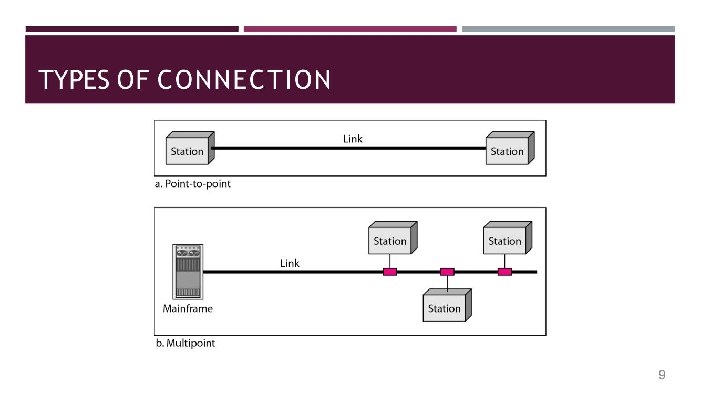
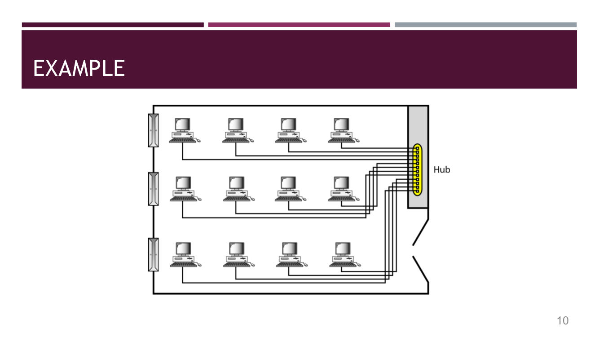
LAN vs WAN
| LAN (Local Area Network) | WAN (Wide Area Network) | |
|---|---|---|
| Coverage | Single office, building or campus, limited to a few kilometers | Large geographic areas: country, continent, or the whole world |
| Ownership | Privately owned | Long-distance data transmission |
| Purpose | Sharing resources: hardware (printer) and software (application program) | Links end systems and LANs over long distance |
| Speed | Normally 100 or 1000 Mbps | - |
| Kinds | - | Switched WAN: connects end systems, which usually comprise a router. Point-to-point WAN: a line leased from a telephone or cable TV provider connecting a home computer or small LAN to an ISP (Internet Service Provider) |
- Slide 12 diagram: (a) Switched WAN = end systems A, B, C around a cloud of interconnected switches. (b) Point-to-point WAN = computer, modem, dotted line, modem, ISP.
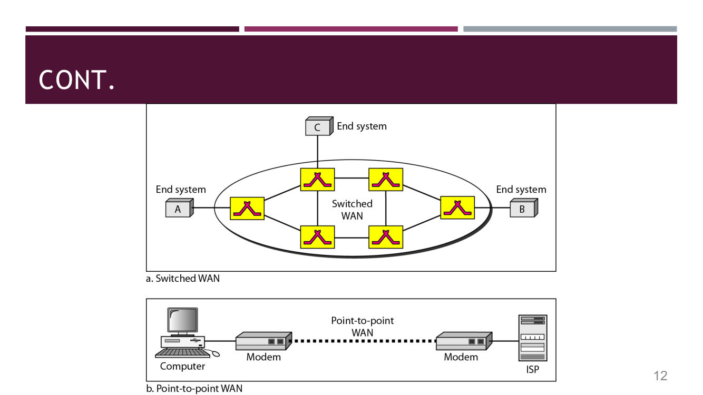
A heterogeneous network
- A heterogeneous network mixes several network types joined by routers.
- Diagram: a President's computer connects by modem over a point-to-point WAN (Wide Area Network) to a switched WAN. Two routers link out over point-to-point WANs to two LANs (Local Area Networks) (one bus LAN, one hub-based LAN).
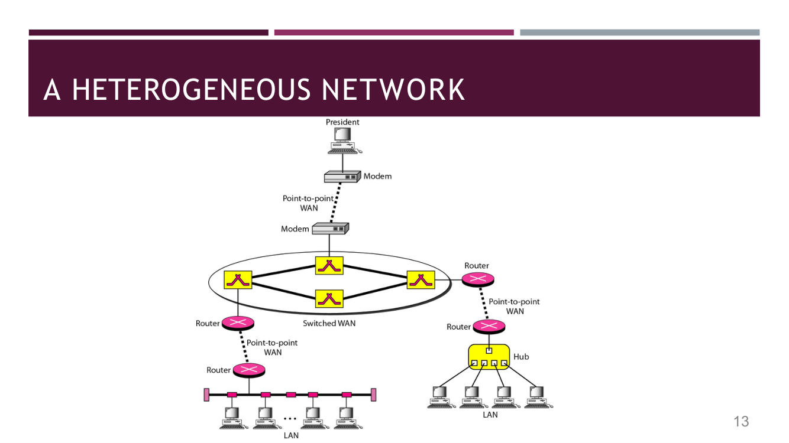
OSI (Open Systems Interconnection) model
- 7 layers from top to bottom: 7 Application, 6 Presentation, 5 Session, 4 Transport, 3 Network, 2 Data link, 1 Physical.
- Each layer talks to the same layer on the other device through a peer-to-peer protocol and to the layer above/below through an interface (7-6, 6-5, 5-4, 4-3, 3-2, 2-1).
- Intermediate nodes (routers) only use layers 1, 2 and 3. Layers 4-7 exist only in the end devices A and B.
- Physical communication happens only at layer 1 (bits on the medium).
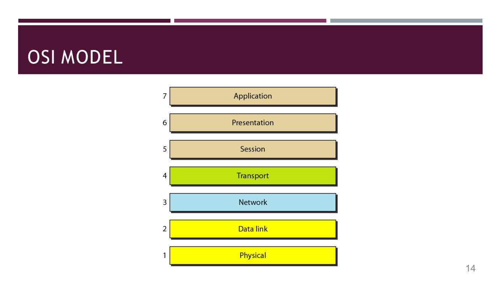
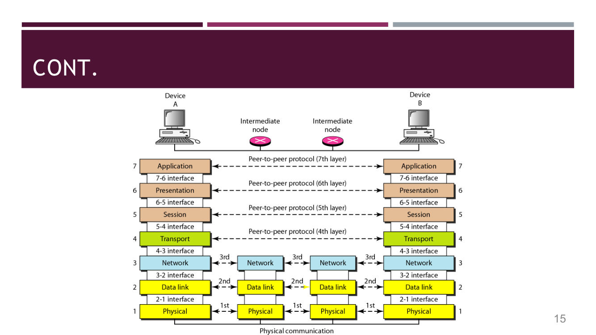
Data encapsulation
- Each layer adds its own header (H7 down to H2) to the data from above. Layer 2 also adds a trailer (T2). Result is converted to bits.
- At the receiver, each layer strips its header and passes data up (dashed boxes in the diagram).
- PDU = Protocol Data Unit, with headers and trailers.
| Layer | PDU |
|---|---|
| 1 Physical | Bits |
| 2 Data link | Frames |
| 3 Network | Packets |
| 4 Transport | Segments |
| 5-7 | Data stream |
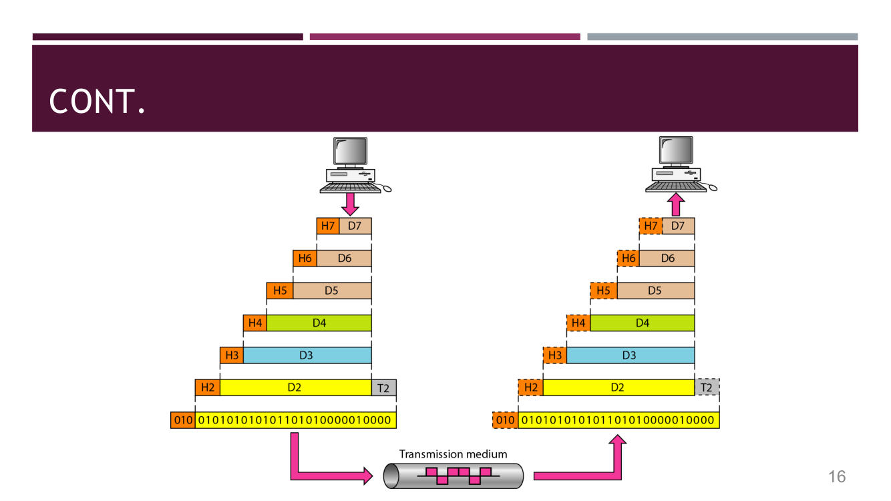
The seven layers: job, PDU (Protocol Data Unit), key phrase
| # | Layer | Job | PDU / device |
|---|---|---|---|
| 7 | Application | Lets the user access the network; contains protocols commonly needed by users. Summary: allow access to network resources | Data |
| 6 | Presentation | Concerned with syntax and semantics of information exchanged; defines the format of the data; also compression and encryption. Summary: translate, encrypt, compress | Data |
| 5 | Session | The network dialog controller; establishes, maintains, and synchronizes interaction between communicating systems. Summary: establish, manage, terminate sessions | Data |
| 4 | Transport | Delivery of a message from one process to another. Summary: reliable process-to-process delivery and error recovery | Segments |
| 3 | Network | Delivery of individual packets from source host to destination host. Summary: move packets source to destination; provide internetworking | Packets (router) |
| 2 | Data link | Moves frames from one hop (node) to the next. Summary: organize bits into frames; hop-to-hop delivery | Frames (switch) |
| 1 | Physical | Transmits raw bits over a channel; defines mechanical and electrical specifications of interfaces and medium, and procedures physical devices must perform | Bits |
- Session layer exists because the services of the first three layers (physical, data link, network) are not sufficient for some processes.
- Devices: switch = layer 2 (slide 34). Router/switch in a datagram network = layer 3. Hub appears in the LAN (Local Area Network) diagrams.
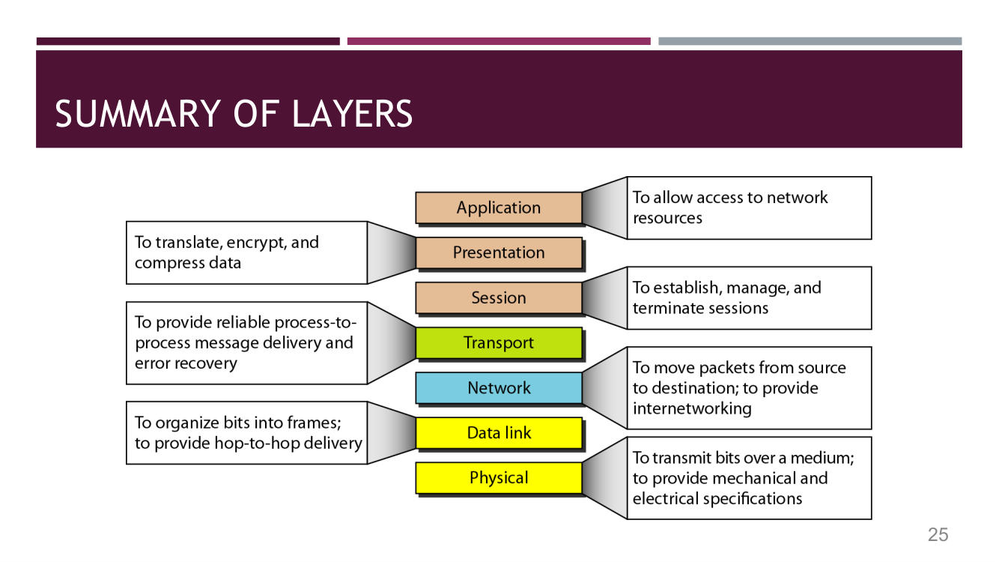
TCP/IP (Transmission Control Protocol/Internet Protocol) protocol suite
- TCP/IP was developed before the OSI (Open Systems Interconnection) model.
- Its layers do not exactly match OSI layers.
- Original suite had four layers: host-to-network, internet, transport, application.
- Mapping in the diagram: Application + Presentation + Session = Application (SMTP (Simple Mail Transfer Protocol), FTP (File Transfer Protocol), HTTP (Hypertext Transfer Protocol), DNS (Domain Name System), SNMP (Simple Network Management Protocol), TELNET (Teletype Network)). Transport = SCTP (Stream Control Transmission Protocol), TCP (Transmission Control Protocol), UDP (User Datagram Protocol). Network = IP (Internet Protocol) with ICMP (Internet Control Message Protocol), IGMP (Internet Group Management Protocol), RARP (Reverse Address Resolution Protocol), ARP (Address Resolution Protocol). Data link + Physical = host-to-network (protocols defined by the underlying networks).
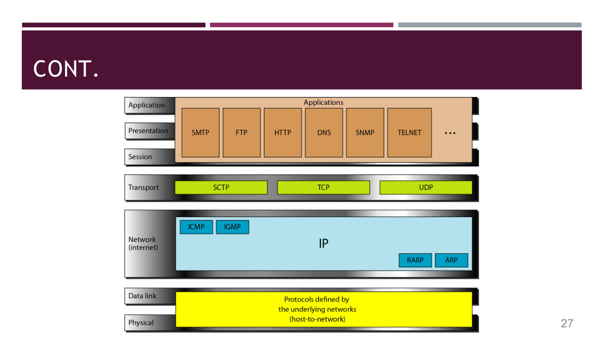
Internet layer protocols
| Protocol | Role |
|---|---|
| IP (Internet Protocol) (Internetworking Protocol) | Unreliable and connectionless. Transports data in packets called datagrams, each transported separately |
| ARP (Address Resolution Protocol) | Associates a logical address with a physical address |
| RARP (Reverse Address Resolution Protocol) (Reverse ARP) | Lets a host discover its internet address when it knows only its physical address |
| ICMP (Internet Control Message Protocol) | Used by hosts and gateways to send notification of datagram problems back to the sender |
| IGMP (Internet Group Management Protocol) (Internet Group Message Protocol) | Facilitates simultaneous transmission of a message to a group of recipients |
Transport layer protocols
| Protocol | Service |
|---|---|
| UDP (User Datagram Protocol) | Connectionless service |
| TCP (Transmission Control Protocol) | Connection-oriented service |
| SCTP (Stream Control Transmission Protocol) | Supports newer applications such as voice over the internet |
Addressing in TCP/IP (Transmission Control Protocol/Internet Protocol)
| Layer | Address type |
|---|---|
| Application | Specific addresses (for processes) |
| Transport (SCTP (Stream Control Transmission Protocol), TCP (Transmission Control Protocol), UDP (User Datagram Protocol)) | Port addresses |
| Network (IP (Internet Protocol) and other protocols) | Logical addresses |
| Data link + Physical | Physical addresses |
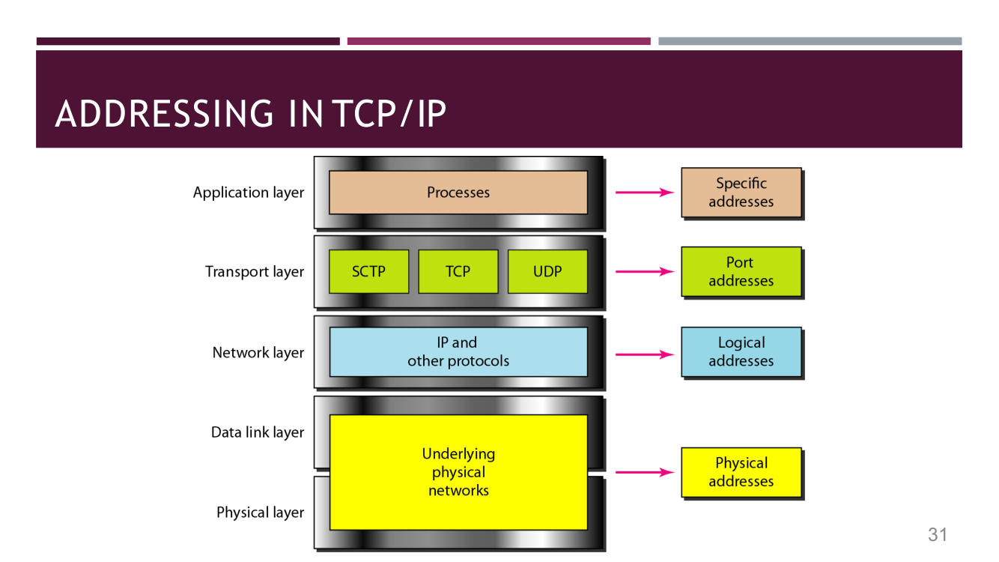
Physical (MAC (Media Access Control)) addresses
- Physical address (link address) = address of a node as defined by its LAN (Local Area Network) or WAN (Wide Area Network).
- It is included in the frame used by the data link layer.
- Size and format vary with the network.
- Ethernet: 6-byte physical address imprinted on the network interface card (NIC).
- LocalTalk (Apple): 1-byte dynamic address that changes each time the station comes up.
- Most LANs use a 48-bit (6-byte) address written as 12 hexadecimal digits; each byte (2 hex digits) separated by a colon. Example: 07:01:02:01:2C:4B
Switch
- A common network device that operates at the data link layer.
- Has multiple ports, each connected to a computer.
- Operation: learn the MAC (Media Access Control) address of each connected computer, then forward frames only to the destination computer.
- Combining switches: can be arranged into a tree. Each port learns the MAC addresses of machines in the segment (subtree) connected to it.
- Frames to unknown MAC addresses are broadcast.
- Frames to MAC addresses in the same segment as the sender are ignored.
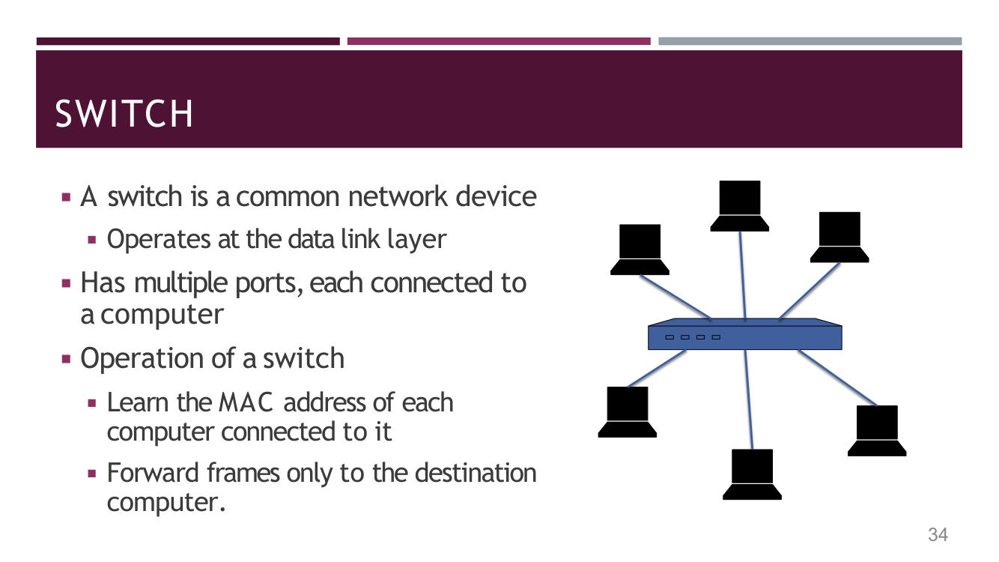
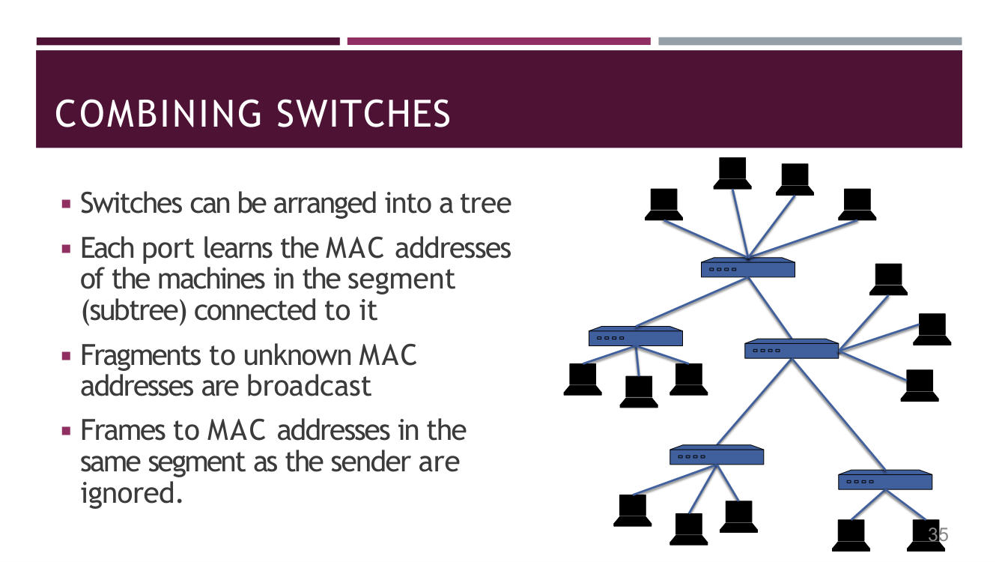
Logical (IP (Internet Protocol)) addresses
- Needed for universal communication independent of the underlying physical networks.
- Each host must be identified uniquely, regardless of the physical network.
- An Internet logical address is currently a 32-bit address that uniquely defines a host on the Internet.
- Slide 37 example: sender A/10 on LAN (Local Area Network) 1 sends to receiver P/95 on LAN 3 through Router 1 and Router 2. The logical addresses (A and P) stay the same end to end. The physical addresses change at every hop (20/10, then 99/33, then 95/66). The frame header and trailer (T2) are rebuilt on each LAN.
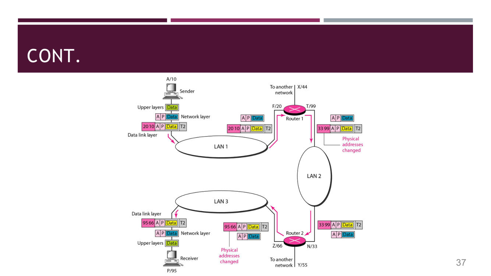
Port addresses
- In TCP/IP (Transmission Control Protocol/Internet Protocol), the label assigned to a process is called a port address.
- A port address is 16 bits long.
- Written as one decimal number, for example 753.
- Slide 39 example: process a on sender A talks to process j on receiver P. The transport layer adds the port pair (a, j), the network layer adds the IP (Internet Protocol) pair (A, P), the data link layer adds H2 and T2. Receiver unwraps layer by layer and delivers to process j.
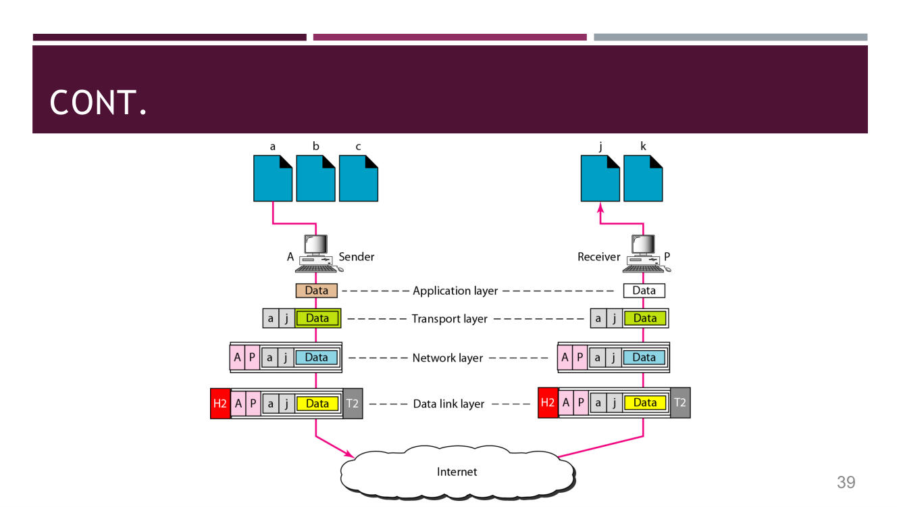
Datagram networks
- In a packet-switched network, the message is divided into packets of fixed or variable size.
- Packet size is determined by the network and the governing protocol.
- No resource reservation; resources are allocated on demand.
- Datagram switching is done at the Network layer. They are connectionless networks.
- Slide 41: packets 1-4 from A take different routes and can arrive at X out of order (2, 3, 4, 1).
- Routing table: a switch uses a table based on the destination address (destination address to output port, for example 1232 to port 1, 4150 to port 2, 9130 to port 3).
- The destination address in the packet header remains the same during the entire journey.
- Delay (slide 43): total delay = transmission time at each hop + waiting time at each router.
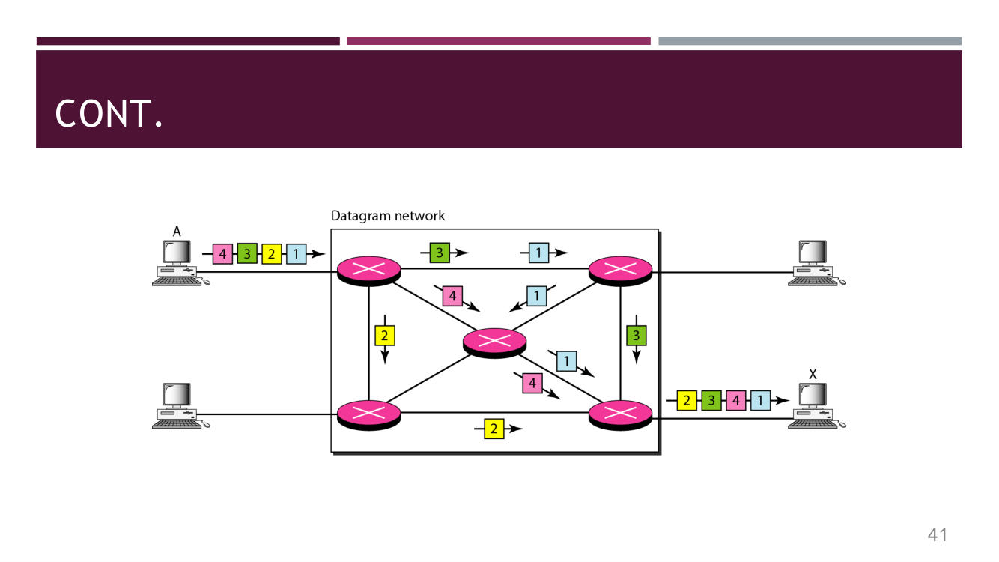
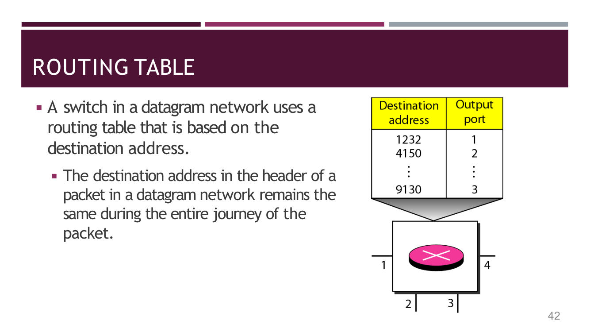
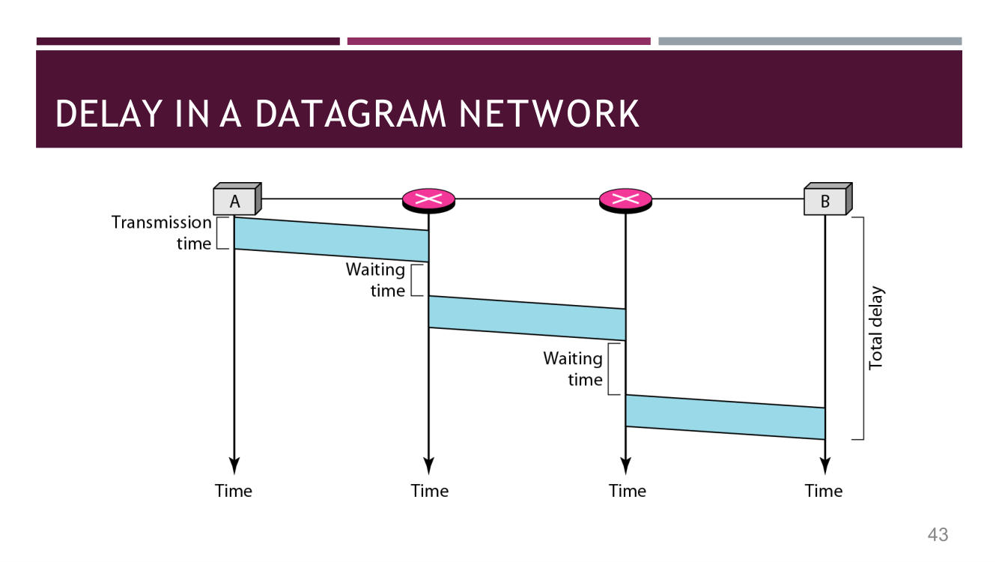
What is security?
- Security generally means three things (the CIA (Confidentiality, Integrity, Availability) triad):
| Property | Meaning |
|---|---|
| Confidentiality | Access to systems or data is limited to authorized parties |
| Integrity | When you ask for data, you get the "right" data |
| Availability | The system or data is there when you want it |
- A computing system is secure only if it has all three properties.
Security requirements
| Group | Term | Assures that |
|---|---|---|
| Confidentiality | Data confidentiality | Private or confidential information is not made available or disclosed to unauthorized individuals |
| Privacy | Individuals control or influence what information related to them may be collected and stored, and by whom and to whom it may be disclosed | |
| Integrity | Data integrity | Information and programs are changed only in a specified and authorized manner |
| System integrity | A system performs its intended function in an unimpaired manner, free from deliberate or inadvertent unauthorized manipulation | |
| Availability | - | Systems work promptly and service is not denied to authorized users |
Must-know in one screen
- A network = devices + communication links to transmit information and share resources; distributed processing = a task split among multiple computers.
- Simplex = one way; half-duplex = both ways but not at the same time; full-duplex = both at once.
- Connection-oriented = set up, transmission, tear down (reliable); connectionless = send as soon as there is data.
- Performance = transit time + response time; metrics are throughput (want more) and delay (want less); reliability = frequency of failure.
- LAN (Local Area Network): private, office/building/campus, few km, 100 or 1000 Mbps. WAN (Wide Area Network): country/continent/world; switched WAN or point-to-point WAN.
- OSI (Open Systems Interconnection) 7 layers: Application, Presentation, Session, Transport, Network, Data link, Physical.
- PDUs (Protocol Data Units): Physical = bits, Data link = frames, Network = packets, Transport = segments, layers 5-7 = data stream.
- Presentation = syntax/semantics, compression, encryption. Session = dialog controller (establish, maintain, synchronize).
- Data link = hop-to-hop; Network = host-to-host; Transport = process-to-process.
- TCP/IP (Transmission Control Protocol/Internet Protocol) is older than OSI; original 4 layers: host-to-network, internet, transport, application.
- IP (Internet Protocol) is unreliable and connectionless (datagrams); ARP (Address Resolution Protocol) = logical to physical; RARP (Reverse Address Resolution Protocol) = physical to logical; ICMP (Internet Control Message Protocol) = error notices; IGMP (Internet Group Management Protocol) = group (multicast).
- UDP (User Datagram Protocol) = connectionless; TCP (Transmission Control Protocol) = connection-oriented; SCTP (Stream Control Transmission Protocol) = newer apps such as voice over IP.
- Four addresses: physical (48-bit MAC (Media Access Control), 6 bytes, 12 hex digits), logical (32-bit IP), port (16-bit), specific.
- Switch works at data link layer, learns MAC addresses, forwards frames only to the destination; unknown MAC = broadcast.
- Datagram network: no resource reservation, network layer, connectionless; security = Confidentiality, Integrity, Availability, and a system is secure only with all three.
Lecture 2 · Network Threats and Attacks, Part 1
Threat vs attack (RFC (Request for Comments) 4949)
| Term | Definition (slide 3) |
|---|---|
| Threat | A potential for violation of security, which exists when there is a circumstance, capability, action, or event that could breach security and cause harm. A threat is a possible danger that might exploit a vulnerability. |
| Attack | An assault on system security that derives from an intelligent threat: an intelligent act that is a deliberate attempt (especially a method or technique) to evade security services and violate the security policy of a system. |
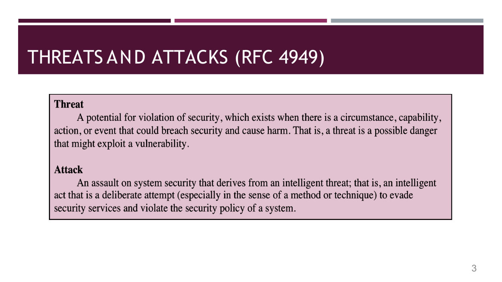
Internet security issues: why the Internet is weak
- The Internet was exclusively populated by people with no malicious intent.
- The challenge: build security and safeguards into Internet protocols.
| Property | The problem | The fix |
|---|---|---|
| Confidentiality | No layer requires packet contents to be confidential. Standard protocols do not encrypt headers or data. | Encrypt explicitly: at the application layer (HTTPS (Hypertext Transfer Protocol Secure)) or by revising a lower-layer protocol (IPsec (Internet Protocol Security)). |
| Integrity | Only simple checksums validate data and header contents. Not cryptographically secure. | Do integrity at the application layer or with alternative lower-layer protocols. |
| Availability | The sheer size of the Internet makes 24/7 availability hard. Requests may come from a crowd of legitimate users or from an attack by many compromised hosts (denial of service). | Network applications that scale with requests and/or block illegitimate requests. |
| Assurance | By default, a packet may travel between any source and destination. | Permissions and policies must be explicit additions: firewalls. |
| Authenticity | Headers or trailers have no place for digital signatures; no notion of user identities. | - |
MAC (Media Access Control) spoofing attack
- A MAC spoofing attack impersonates another machine, using an analysis tool like ARP (Address Resolution Protocol) or Wireshark.
- Steps: (1) find out the MAC address of the target machine; (2) reconfigure the MAC address of the rogue machine; (3) turn off or unplug the target machine.
- Countermeasures: block the port of the switch when the machine is turned off or unplugged; disable duplicate MAC addresses.
Viewing and changing MAC (Media Access Control) addresses
| Task | Linux | Windows |
|---|---|---|
| View MAC addresses | ifconfig | ipconfig /all |
| Change MAC address | 1. Stop networking: /etc/init.d/network stop 2. Change: ifconfig eth0 hw ether <MAC-address> 3. Start networking: /etc/init.d/network start | 1. Open the Network Connections applet 2. Open the properties of the network interface 3. Click Configure ... 4. In the Advanced tab, change the network address to the desired value |
- Changing a MAC address requires administrator privileges.
ARP (Address Resolution Protocol) and the ARP cache
- The ARP cache stores IP (Internet Protocol) to MAC (Media Access Control) mappings. The command arp -a displays the ARP table (Linux and Windows).
- Table columns: Internet Address, Physical Address, Type. Example: 128.148.31.1 = 00-00-0c-07-ac-00 (static); 128.148.31.15 = 00-0c-76-b2-d7-1d (dynamic).
- ARP is simple and effective, but lacks an authentication scheme.
- Any computer on the network could claim to have the requested IP address.
ARP (Address Resolution Protocol) spoofing (ARP poisoning)
- The ARP table is updated whenever an ARP response is received.
- Requests are not tracked. ARP announcements are not authenticated. Machines trust each other. A rogue machine can spoof other machines.
- Almost all ARP implementations are stateless.
- The power of ARP spoofing comes from the lack of identity verification in the Internet's underlying mechanisms.
- An ARP cache updates every time it receives an ARP reply, even if it did not send any ARP request.
- It is possible to "poison" an ARP cache by sending gratuitous ARP replies.
| Attack | How it works | Countermeasure |
|---|---|---|
| ARP spoofing | Rogue sends unsolicited (gratuitous) ARP replies; victims blindly update their cache | Use static entries; check for multiple occurrences of the same MAC (Media Access Control) address on the LAN (Local Area Network) |
ICMP attacks: Ping of Death and Ping flood
- ICMP = Internet Control Message Protocol.
- Ping of death (PoD): ICMP specifies messages must fit a single IP (Internet Protocol) packet (64 KB). The attacker sends a ping that exceeds the maximum size using IP fragmentation. The reassembled packet caused several operating systems to crash due to a buffer overflow.
- Ping flood (a newer type of PoD): ICMP packets sent rapidly via ping without waiting for replies.
- Solution: block any fragmented ICMP pings at the firewall.
Smurf attack
- Ping an IP (Internet Protocol) broadcast address using a spoofed source IP address (the victim's address).
- Flow in the diagram: Attacker sends one echo request to the amplifying network; every host there sends an echo response to the victim. One small request becomes many replies, flooding the victim.
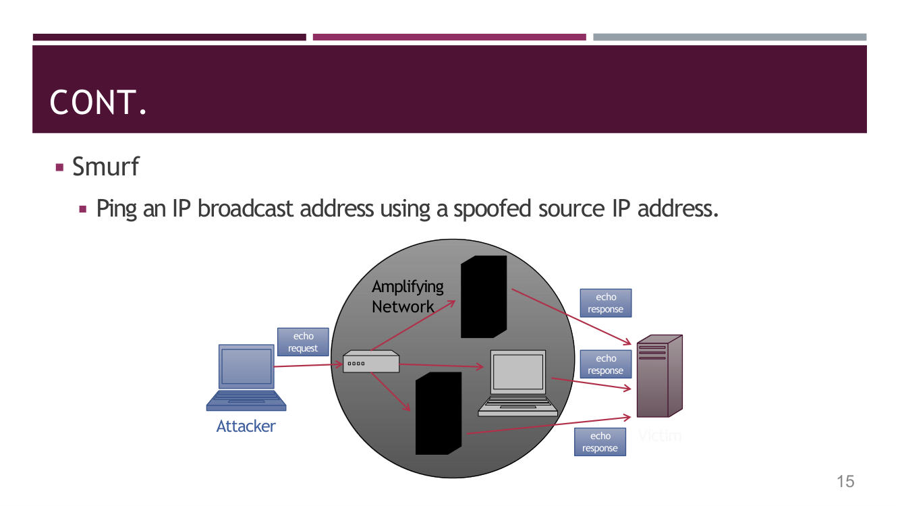
IP (Internet Protocol) vulnerabilities
| Weakness | Consequence |
|---|---|
| Unencrypted transmission | Eavesdropping possible at any intermediate host during routing |
| No source authentication | Sender can spoof the source address, hard to trace back. Enables DoS (Denial of Service), Smurf, Man in the Middle |
| No integrity checking | Entire packet (header and payload) can be modified en route: content forgeries, redirections, man-in-the-middle |
| No bandwidth constraints | Large numbers of packets can be injected to launch DoS; broadcast addresses add leverage |
IP (Internet Protocol) attacks: spoofing and sniffing
| Attack | How it works | Countermeasure |
|---|---|---|
| IP spoofing | Modification of the source address to something other than the sender's real IP. The validity of the source address is never checked. | - |
| Packet sniffing | Listening in on traffic in a network that is intended for the Internet | Use encryption in higher-level protocols so attackers cannot recover sensitive data |
DoS (Denial of Service) and DDoS (Distributed Denial of Service)
- Send a large number of packets to a host providing a service; it slows down or crashes.
- Often executed by a botnet .
- Attack propagation: starts at zombies; travels through a tree of Internet routers rooted at and ending at the victim.
- It hides the attacker and scatters return traffic from the victim.
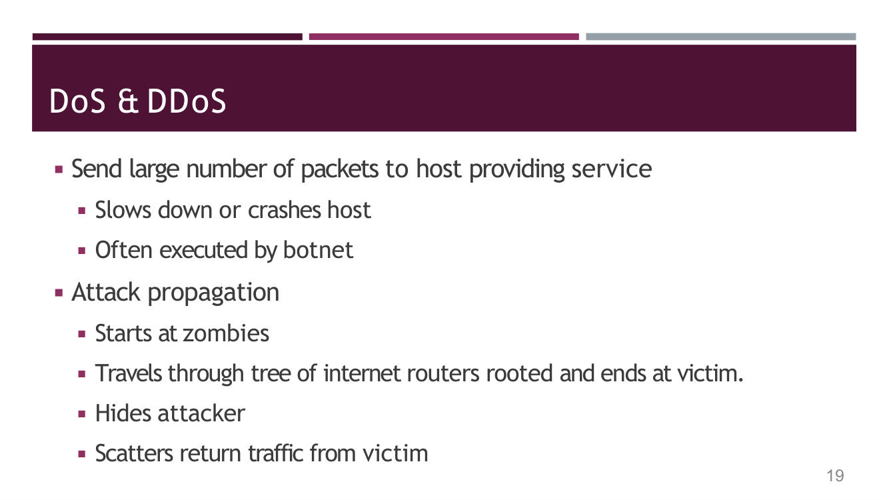
IP (Internet Protocol) traceback
- Method used to determine the origin of a packet on the Internet.
- Problem: how to identify the leaves of the DoS (Denial of Service) propagation tree (the routers next to the attacker).
- Issues: more than 2M Internet routers; the attacker can spoof the source address; the attacker knows traceback is being performed.
| Approach | Cost / note |
|---|---|
| Filtering and tracing | Immediate reaction |
| Messaging | Additional traffic |
| Logging | Additional storage |
| Probabilistic packet marking (PPM) | Routers mark packets with some probability |
Attack summary table: attack, mechanism, countermeasure
| Attack | Layer / protocol | How it works | Countermeasure |
|---|---|---|---|
| MAC (Media Access Control) spoofing | Data link | Copy target's MAC, then take it offline | Block switch port when target is off; disable duplicate MACs |
| ARP (Address Resolution Protocol) spoofing | ARP | Gratuitous ARP replies poison cache | Static entries; detect duplicate MACs |
| Ping of death | ICMP (Internet Control Message Protocol) | Oversized fragmented ping, buffer overflow crash | Firewall blocks fragmented ICMP pings |
| Ping flood | ICMP | Rapid pings with no waiting for replies | Firewall |
| Smurf | ICMP / IP (Internet Protocol) | Ping broadcast address with spoofed source | - |
| IP spoofing | IP | Fake source address (never validated) | - |
| Packet sniffing | IP | Listen to traffic | Encryption in higher-level protocols |
| DoS (Denial of Service) / DDoS (Distributed Denial of Service) | IP | Flood host with packets, often from botnet zombies | IP traceback (filtering, messaging, logging, PPM) |
Must-know in one screen
- Threat = potential for violation of security (a possible danger that might exploit a vulnerability); attack = deliberate, intelligent attempt to evade security services (RFC (Request for Comments) 4949).
- The Internet was built for people with no malicious intent, so security was not built into the protocols.
- No layer encrypts headers or data; fix with HTTPS (application layer) or IPsec (lower layer).
- Integrity uses only simple checksums, which are not cryptographically secure.
- Availability is threatened by sheer size: legitimate crowds or attacks from many compromised hosts.
- Assurance: any packet may go anywhere by default, so policies must be added explicitly (firewalls).
- Authenticity: headers and trailers have no place for digital signatures and no notion of user identity.
- MAC (Media Access Control) spoofing: learn target MAC, copy it onto a rogue machine, take the target offline. Counter: block switch port, disable duplicate MACs.
- View MAC: ifconfig (Linux), ipconfig /all (Windows). Changing MAC needs administrator privileges.
- ARP (Address Resolution Protocol) lacks authentication; arp -a shows the cache (static vs dynamic entries).
- ARP spoofing works because ARP is stateless and accepts replies even without a request. Counter: static entries, check duplicate MACs.
- Ping of death: oversized (above 64 KB) fragmented ICMP (Internet Control Message Protocol) crashes the OS (Operating System) by buffer overflow; counter: block fragmented ICMP pings at the firewall. Ping flood: pings sent without waiting for replies.
- Smurf: ping the broadcast address with the victim's spoofed source IP (Internet Protocol); the amplifying network floods the victim.
- IP weaknesses: no encryption, no source authentication, no integrity check, no bandwidth limits. IP spoofing and sniffing (counter: encryption).
- DoS (Denial of Service)/DDoS (Distributed Denial of Service) uses botnet zombies; IP traceback faces more than 2M routers and spoofed sources; approaches are filtering and tracing, messaging, logging, and probabilistic packet marking.
Lecture 3 · Network Threats and Attacks (Part 2)
TCP (Transmission Control Protocol) protocol (+ stream delivery)
- TCP is a process-to-process protocol and uses port numbers.
- TCP is connection-oriented and reliable: it creates a virtual connection between two TCPs to send data.
- Uses an acknowledgement mechanism to check the safe and sound arrival of data.
- Uses flow control and error control.
- Stream delivery service: the sender gives data as a stream of bytes, and the receiver gets it as a stream of bytes.
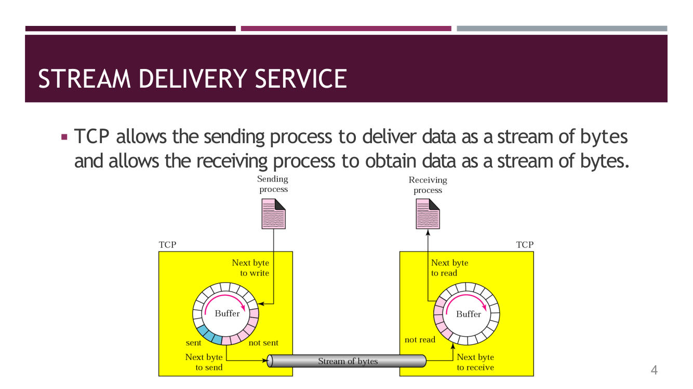
Establishing a TCP (Transmission Control Protocol) connection: three-way handshake
- The server has a passive listener (passive open), waiting for a connection request.
- The client is the active open.
| Step | Who sends | Packet | Values on the slide |
|---|---|---|---|
| 1 | Client → Server | SYN (Synchronize) | seq = 8000 |
| 2 | Server → Client | SYN/ACK (Synchronize/Acknowledgement) | seq = 15000, ack = 8001, rwnd = 5000 |
| 3 | Client → Server | ACK (Acknowledgement) | seq = 8000, ack = 15001, rwnd = 10000 |
- After step 3 the connection is established.
- Flags: S = SYN flag, A = ACK flag. The ack number is always the other side's seq + 1.
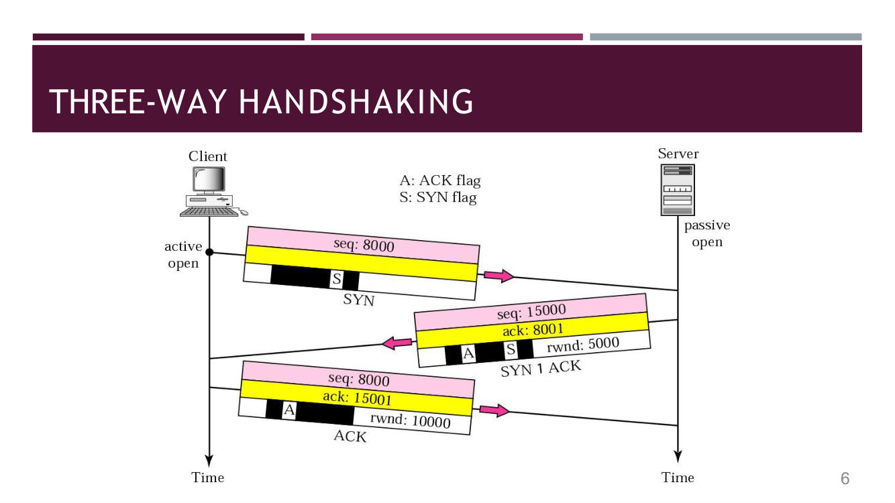
SYN (Synchronize) flood
- Also called the "half-open" attack.
- Attacker sends repeated SYN packets to every port on the server using spoofed source addresses.
- Server answers each one with a SYN-ACK (Synchronize-Acknowledgement) from each open port, then waits for the ACK (Acknowledgement) for some time.
- The attacker either never sends the ACK, or (spoofed IP (Internet Protocol)) never receives the SYN-ACK at all.
- So the connection stays open (half-open).
- Before it times out, another SYN arrives. The queue fills.
- Result: legitimate clients are denied service and the server may crash.
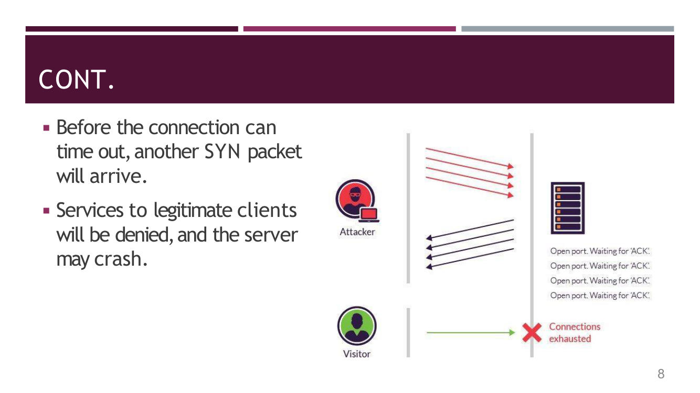
How to mitigate SYN (Synchronize) flood
| Method | How it works |
|---|---|
| Increase the backlog queue | Increase the maximum number of possible half-open connections. The system must reserve additional memory for all the new requests. |
| Recycle the oldest half-open TCP (Transmission Control Protocol) connection | Overwrite the oldest half-open connection once the backlog is full. |
| SYN cookies | Lets the server avoid dropping connections when the SYN queue fills. Server drops the SYN entry from the queue after sending the SYN-ACK (Synchronize-Acknowledgement), leaving the port open for new connections. If a legitimate final ACK (Acknowledgement) arrives, the server rebuilds the queue entry from info encoded in the TCP sequence number. |
Session hijacking
- A security attack on a TCP (Transmission Control Protocol) session over a protected network. Attempt to take control of a network session.
- Taking over a web user session by secretly obtaining the session ID (Identifier) and masquerading as the authorized user .
- Attacker uses source-routed IP (Internet Protocol) packets to insert commands into an active communication between two nodes, disguised as one of the authenticated users.
- Two ways listed: Session sniffing and Cross Site Scripting (XSS (Cross-Site Scripting) attack).
How to prevent session hijacking
| Level | Measure |
|---|---|
| Network level | Cipher the packets so the hijacker cannot decipher the packet headers. Recommended protocols: SSH (Secure Shell), SSL (Secure Sockets Layer) (Secure Socket Layers), IPSec (Internet Protocol Security). |
| Application level | Servers keep track of messages between client and server and their actions: the server keeps state of a client's connection. |
- A defender must implement both application-level and network-level measures.
Port address ranges
| Range | Ports |
|---|---|
| Well Known Ports | 0 - 1023 |
| Registered Ports | 1024 - 49151 |
| Dynamic and/or Private Ports | 49152 - 65535 |
Port scan attack
- Attacker sends client requests to a range of server port addresses on a host, to find an active port and exploit a known vulnerability of that service.
- Idea: probe as many listeners as possible and keep track of the ones that are receptive or useful.
- Port knocking: ports that the firewall keeps closed by default are opened externally. It works by requiring connection attempts to a series of predefined closed ports.
Types of scanning
| Scan | How it works | Advantage | Disadvantage |
|---|---|---|---|
| TCP (Transmission Control Protocol) connect scan | Most basic TCP scan. Uses the OS (Operating System) connect system call. If the port is listening, connect succeeds. | Attacker needs no special privileges. | Easily detected by IDS (Intrusion Detection System) and IPS (Intrusion Prevention System). |
| TCP SYN (Synchronize) scan (also known as "half-open" scanning) | Attacker sends SYN and waits. A SYN-ACK (Synchronize-Acknowledgement) means the port is listening. Then the attacker sends RST (Reset). | Most target hosts do not log this attempt. | Most firewalls and IPS devices can detect and filter SYN scanning. |
| TCP FIN (Finish) scan | Many firewalls and IPS allow FIN packets. Closed ports reply with RST; open ports ignore the FIN. Can also distinguish Windows from Unix hosts. | Can evade many firewall and IPS systems. | (none listed) |
Discussion questions (slide 16)
- What is the difference between IDS (Intrusion Detection System) and IPS (Intrusion Prevention System)?
- Mention the differences between Connect scan and SYN (Synchronize) scan.
| IDS | IPS | |
|---|---|---|
| Job | Intrusion detection: identifies intrusions through signatures and reports them. | Intrusion prevention: detects intrusions and manages automatic responsive actions across the network. |
| Connect scan | SYN scan | |
|---|---|---|
| Completes handshake? | Yes (connect succeeds) | No: sends RST (Reset) after SYN-ACK (half-open) |
| Privileges | None needed | (not stated on slide) |
| Detection | Easily detected by IDS/IPS | Most hosts do not log it, but firewalls/IPS can filter it |
Optimistic ACK (Acknowledgement) attack
- Exploits TCP (Transmission Control Protocol) congestion control.
- Attacker sends ACKs for data segments it has not yet received.
- The flood of optimistic ACKs makes the server's TCP stack believe there is lots of bandwidth available, so it increases cwnd (congestion window).
- The attacker sends more optimistic ACKs, eventually causing bandwidth use beyond what the server has.
- Can be done across multiple servers: enough congestion that a section of the network becomes unreachable.
UDP (User Datagram Protocol) flood attack
- A type of DoS (Denial of Service) attack: a large number of UDP packets sent to a target server to overwhelm it.
- When a server gets a UDP packet at a port it does two steps:
- Checks if any program is listening at that port.
- If none, replies with an ICMP (Internet Control Message Protocol) "destination unreachable" packet.
- There are no internal protections that limit the rate of a UDP flood.
How to mitigate UDP (User Datagram Protocol) flood
- Use a firewall to limit the response rate of ICMP (Internet Control Message Protocol) packets (destination unreachable).
- The victim never receives or answers the malicious UDP packets because the firewall stops them.
- Drawback: during an attack, legitimate packets may also be filtered.
Domain Name System (DNS)
- DNS is an application-layer protocol for mapping domain names to IP (Internet Protocol) addresses.
- Example: www.example.com ↔ 208.77.188.166.
- Query path: Client → ISP (Internet Service Provider) DNS server → root name server → com name server → example.com name server, then the answer (208.77.188.166) comes back.
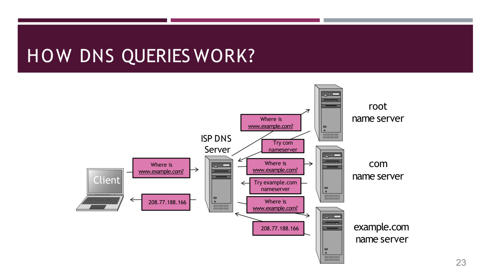
DNS (Domain Name System) attacks: pharming and phishing
| Attack | What it is |
|---|---|
| Pharming | Attacker controls how DNS requests resolve. Requests for websites go to false IP (Internet Protocol) addresses. Victim views or downloads undesired content such as malware. Maps a domain name to a malicious server. |
| Phishing | One of the main uses of pharming. Resolves the domain to a site that looks identical to the real one, to grab usernames, passwords, credit card numbers and other sensitive data. |
- Slide example: normal DNS gives 208.77.188.166; under pharming the same name gives 74.208.31.63. The two sites look the same.
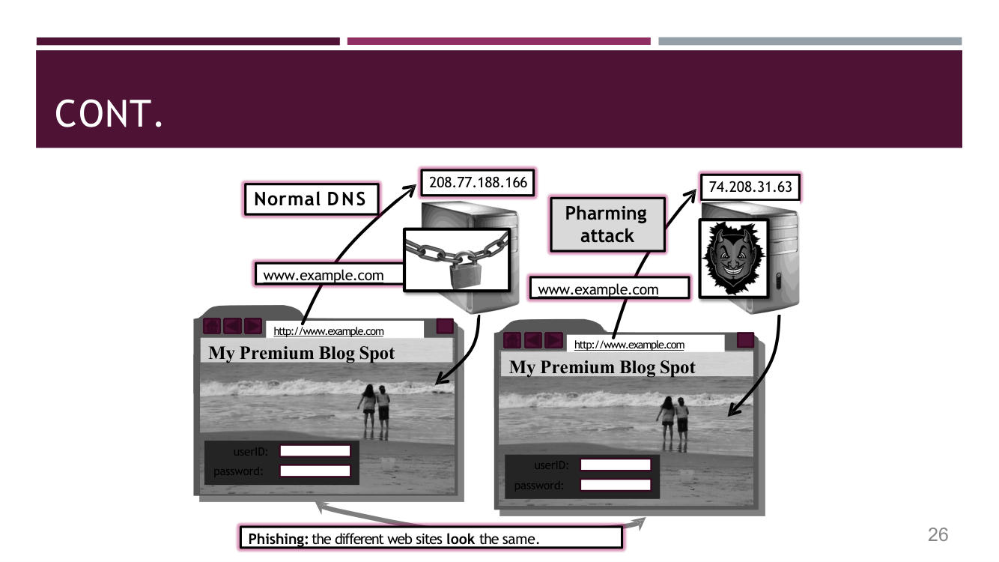
DNS (Domain Name System) cache poisoning
- Attacker tricks a DNS server into caching a false DNS record, so domains resolve to attacker-supplied IPs (Internet Protocol addresses).
- Steps:
- Attacker sends a DNS request for the domain he wants to poison.
- The ISP (Internet Service Provider) DNS server checks its cache and queries the root name servers.
- Attacker sends a fake reply to his own request, guessing the transaction (query) ID (Identifier).
- If he guesses the random query ID, the response is cached.
- Afterwards, any client of that ISP DNS server asking for the poisoned domain is redirected to the attacker's IP.
- In the picture: the real answer is 2.2.2.2, the evil reply says 1.1.1.1 with the same Query ID = x, and the victim then receives 1.1.1.1 from the cache.
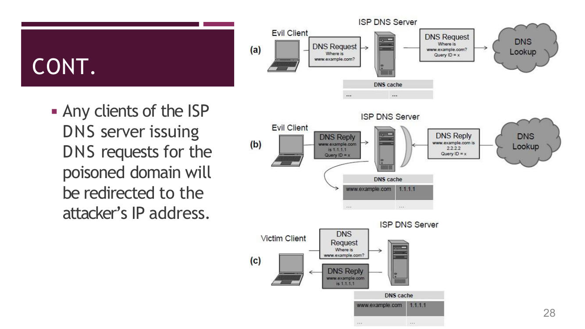
Must-know in one screen
- TCP (Transmission Control Protocol): process-to-process, connection-oriented, reliable, uses ports, ACKs (Acknowledgements), flow and error control.
- Three-way handshake: SYN (Synchronize), SYN/ACK (Synchronize/Acknowledgement), ACK.
- SYN flood = half-open attack: spoofed SYNs, server waits for ACKs that never come, backlog fills, legit users denied.
- SYN flood fixes: bigger backlog, recycle oldest half-open, SYN cookies (state encoded in the sequence number).
- Session hijacking: steal the session ID (Identifier) and masquerade as the user (session sniffing, XSS (Cross-Site Scripting), source-routed packets).
- Prevent hijacking: encrypt (SSH (Secure Shell), SSL (Secure Sockets Layer), IPSec) at network level plus server keeps connection state at application level.
- Ports: Well Known 0-1023, Registered 1024-49151, Dynamic/Private 49152-65535.
- Port scan: probe a range of ports to find an active one with a known vulnerability.
- Connect scan: uses connect, no privileges needed, easily detected.
- SYN scan (half-open): SYN, on SYN-ACK (Synchronize-Acknowledgement) send RST (Reset); often not logged.
- FIN (Finish) scan: closed port replies RST, open port ignores; evades many firewalls; can tell Windows from Unix.
- Optimistic ACK: ACK data not yet received so the server raises cwnd and over-sends.
- UDP (User Datagram Protocol) flood: server replies ICMP (Internet Control Message Protocol) "destination unreachable"; fix is a firewall rate limit on ICMP (drawback: may drop legit packets).
- DNS (Domain Name System) maps names to IPs (Internet Protocol addresses). Pharming = wrong IP for a name; phishing = the fake look-alike site that steals credentials.
- DNS cache poisoning: guess the query ID so a fake record is cached and all clients of that DNS server are redirected.
Lecture 4 · Network Security Elements
Firewalls
- All traffic into/out of a company goes through a small number of gates called choke points.
- Choke points carefully examine traffic, especially incoming, and may refuse it.
- Definition: a firewall is an integrated collection of security measures designed to prevent unauthorized electronic access to a networked computer system.
- Company firewalls do not protect against attacks that originate inside the company.
- So you need multiple layers of defense = defense in depth.
- Analogy: like a building firewall, it isolates one "network" or "compartment" from another.
Firewall policies and actions
- A firewall filters incoming or outgoing traffic based on a predefined set of rules called firewall policies. It sits between the trusted internal network and the untrusted Internet.
| Outcome | Meaning |
|---|---|
| Accepted | Permitted through the firewall. |
| Dropped | Not allowed through, with no indication of failure. |
| Rejected | Not allowed through, and an attempt is made to inform the source that it was rejected. |
- Policies are based on packet properties:
- the protocol: TCP (Transmission Control Protocol) or UDP (User Datagram Protocol)
- source and destination IP (Internet Protocol) addresses
- source and destination ports
- the application-level payload (e.g. does it contain a virus)
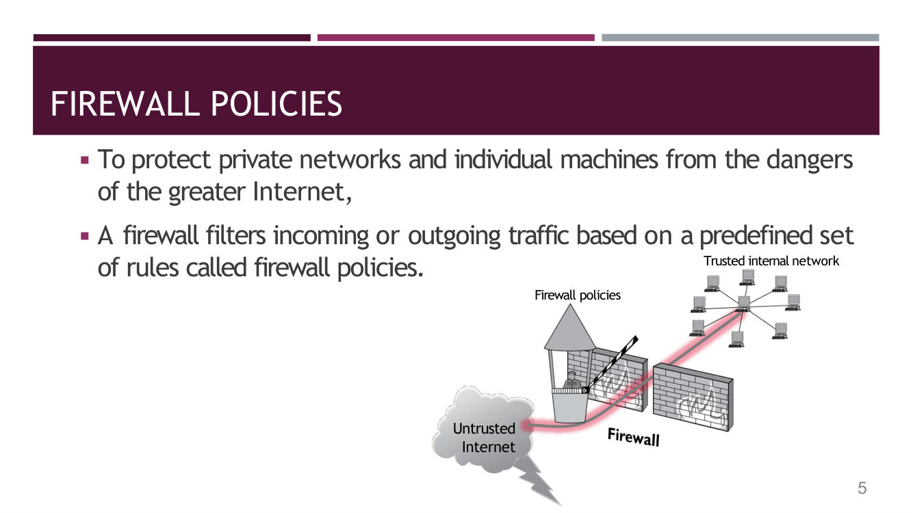
Blacklist vs whitelist
| Blacklist approach | Whitelist approach | |
|---|---|---|
| Rule | Permit everything unless explicitly forbidden. All packets pass except those matching the blacklist. | Forbid everything unless explicitly allowed. This is the default-deny policy. |
| Packets | Allowed unless they match a rule. | Dropped or rejected unless the administrator specifically allows them. |
| Pro | More flexible: service to the internal network is not disrupted. | Safer. |
| Con | Naive for security: assumes the admin can list every property of malicious traffic. | (none listed) |
Firewall types: overview
| Type | Key idea |
|---|---|
| Packet filter (stateless) | If a packet matches the filter's rules, it is dropped or accepted. |
| Stateful filter | Keeps records of all connections passing through. Can tell if a packet is the start of a new connection, part of an existing connection, or an invalid packet. |
| Application layer (proxy) | Can "understand" certain applications and protocols. May inspect the contents of traffic and block inappropriate content (websites, viruses, vulnerabilities). |
| Personal firewall | Runs on a (home) user's computer, especially for computers always online. |
Stateless firewalls (packet filters)
- The simplest type.
- Decides from the packet header only: source and destination addresses and port numbers.
- Port numbers hint at the packet type: 80 = Web, 22 = SSH (Secure Shell). Example: allow Web, but not SSH.
- Ignores the payload.
- Keeps no remembered context ("state"): treats each packet in isolation, without considering packets processed before.
Stateless restrictions (example)
- Stateless firewalls may have to be fairly restrictive to stop most attacks.
- Rules on the slide (client in trusted network, attacker outside):
- Allow outbound SYN (Synchronize) packets, destination port = 80
- Drop inbound SYN packets
- Allow inbound SYN-ACK (Synchronize-Acknowledgement) packets, source port = 80
- The attacker's inbound SYN is blocked.
- Weakness: an attacker can still send a fake SYN-ACK with source port 80, because the firewall remembers nothing about whether the client asked for it. (Stateful firewalls fix this.)
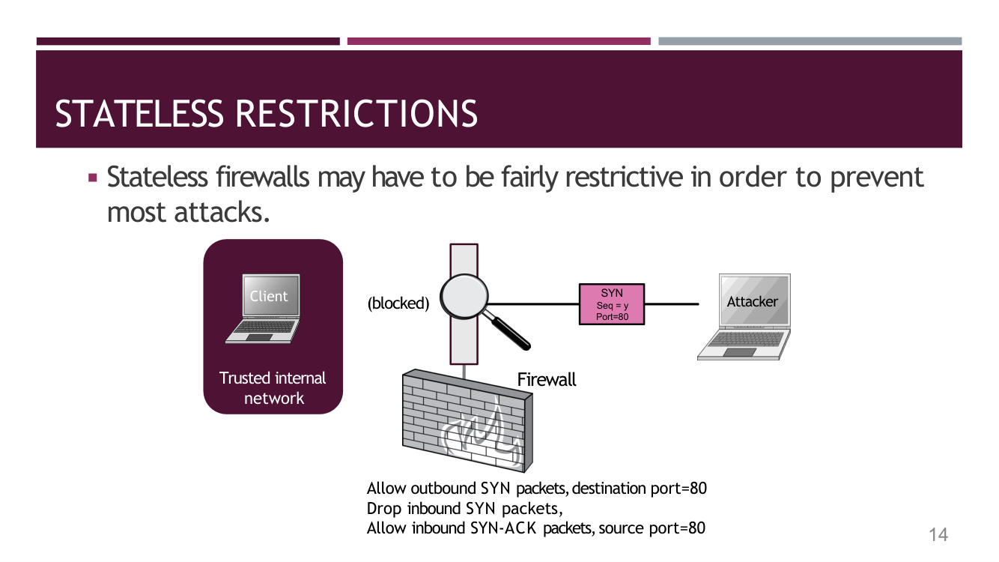
Stateful firewalls
- More expensive than stateless.
- Keeps state to identify packets that belong together.
- Tightens the TCP (Transmission Control Protocol) rules by creating a directory (table) of outbound TCP connections, with one entry for each currently established connection.
- Allows incoming traffic to high-numbered ports only for packets that fit one of the entries in the directory.
- Can tell when packets are part of legitimate sessions originating inside the trusted network.
- State table holds, per active connection: IP (Internet Protocol) addresses, ports, and sequence numbers.
- Result: allows only inbound TCP packets that respond to a connection started from inside.
Stateful firewall: state table and example
State table on the slide (all Established):
| Source address | Source port | Destination address | Destination port | Connection state |
|---|---|---|---|---|
| 192.168.1.100 | 1030 | 210.9.88.29 | 80 | Established |
| 192.168.1.102 | 1031 | 216.32.42.123 | 80 | Established |
| 192.168.1.101 | 1033 | 173.66.32.122 | 25 | Established |
| 192.168.1.106 | 1035 | 177.231.32.12 | 79 | Established |
| 223.43.21.231 | 1990 | 192.168.1.6 | 80 | Established |
| 219.22.123.32 | 2112 | 192.168.1.6 | 80 | Established |
| 210.99.212.18 | 3321 | 192.168.1.6 | 80 | Established |
| 24.102.32.23 | 1025 | 192.168.1.6 | 80 | Established |
| 223.212.212 (as on slide) | 1046 | 192.168.1.6 | 80 | Established |
- First four rows: inside hosts (192.168.1.x) connecting out to port 80 (web), 25 (mail), 79 (finger).
- Last five rows: outside hosts connecting in to the internal server 192.168.1.6 on port 80.
Example: allow only requested TCP (Transmission Control Protocol) connections
- Rule: allow outbound TCP sessions, destination port = 80.
- Client 128.34.78.55 → Server 76.120.54.101:
- SYN (seq = x, port 80) goes out.
- SYN-ACK (seq = y, ack = x + 1) comes back.
- ACK (seq = x + 1, ack = y + 1) goes out.
- Firewall state table records the established TCP session (128.34.78.55, 76.120.54.101).
- An attacker's unsolicited SYN-ACK (seq = y, port 80) matches no entry, so it is blocked.
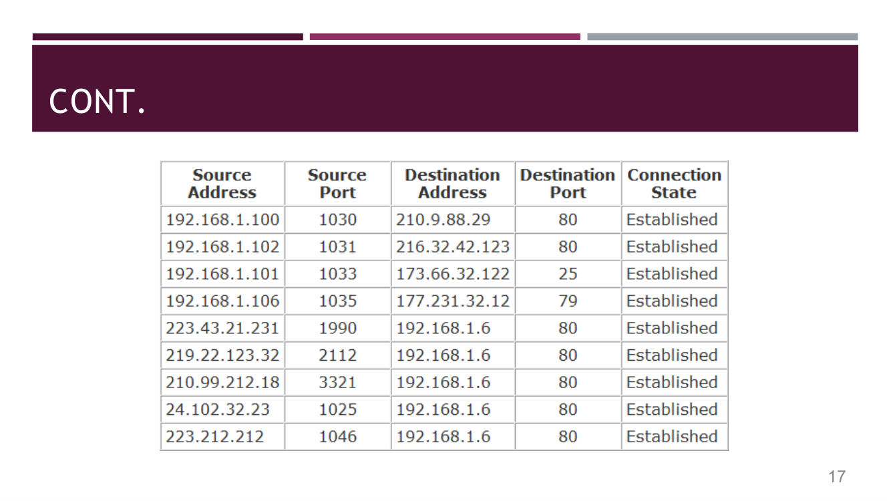
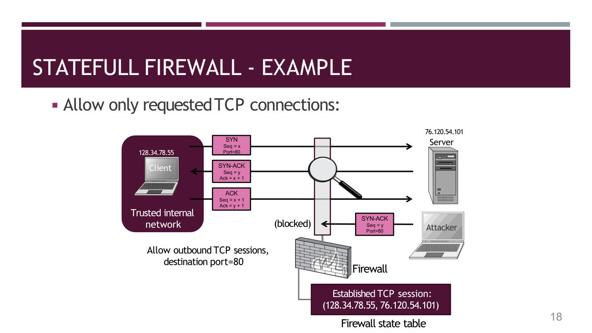
Stateless vs stateful vs proxy
| Stateless (packet filter) | Stateful | Application proxy | |
|---|---|---|---|
| Looks at | Header only (addresses, ports) | Header + connection state table (IPs (Internet Protocol addresses), ports, sequence numbers) | Full application content |
| Memory of past packets | None, each packet in isolation | Yes | Yes, full knowledge of the communication |
| Payload | Ignored | (not stated) | Inspected, can scan for viruses |
| Cost / transparency | Simplest | More expensive | Not as transparent as packet filtering or stateful inspection |
Application proxy
- Client talks to the proxy, and the proxy talks to the actual server.
- Specific to an application (email, Web, ...).
- Not as transparent as packet filtering or stateful inspection.
- An intercepting proxy needs no explicit configuration by the client (client need not know about the filtering).
- All other traffic is blocked.
- Proxy has full knowledge of the communication and can do sophisticated processing:
- limit types of allowed DB queries
- filter URLs (Uniform Resource Locators)
- log all emails
- scan for viruses
Personal firewalls
- Runs on a user's personal computer.
- Typically "forbid everything unless explicitly allowed" (whitelist / default-deny).
- Definitely for communication originating from other computers; maybe also for communication originating on the user's own computer.
- Protects against attacks on servers running on the computer:
- servers running unnecessarily
- servers wrongly configured (allow access from other computers)
- servers with a remotely exploitable bug
Intrusion Detection Systems (IDS)
- Firewalls do not protect against inside attackers or insiders making mistakes, and they can be subverted.
- IDSs are the next line of defense.
- An IDS monitors activity to identify malicious or suspicious events. It receives events from sensors, stores and analyzes them, and takes action if necessary.
| Term | Definition |
|---|---|
| Intrusion | Actions aimed at compromising security of the target: confidentiality, integrity, availability of computing/networking resources. |
| Intrusion detection | The identification (through intrusion signatures) and report of intrusion activities. |
| Intrusion prevention | The process of both detecting intrusion activities and managing automatic responsive actions throughout the network. |
IDS (Intrusion Detection System) components
- IDS sensors collect events.
- The IDS manager compiles data from the sensors to decide whether an intrusion occurred.
- The decision uses site policies: rules and conditions that define probable intrusions.
- If the manager detects an intrusion, it sounds an alarm.
- Diagram: Untrusted Internet → routers → firewall, with IDS sensors placed at routers and a central IDS manager.
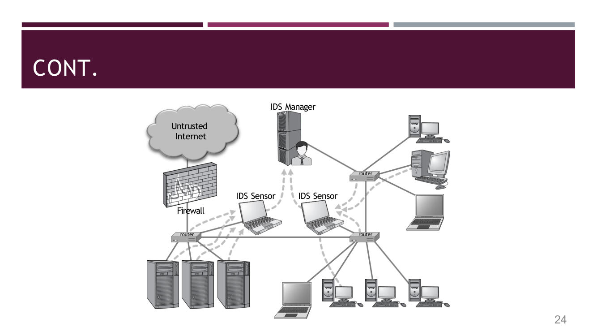
What an IDS (Intrusion Detection System) detects: intruder types
| Intruder | Meaning |
|---|---|
| Masquerader | An attacker falsely using the identity/credentials of a legitimate user to gain access. |
| Misfeasor | A legitimate user who performs actions he is not authorized to do. |
| Clandestine user | A user who tries to block or cover up his actions by deleting audit files and/or system logs. |
What an IDS (Intrusion Detection System) detects: automated attacks
| Attack | Meaning |
|---|---|
| Port scans | Information gathering to find which ports on a host are open for TCP (Transmission Control Protocol) connections. |
| Denial-of-service | Network attacks that overwhelm a host and shut out legitimate access. |
| Malware attacks | Replicating malicious software: Trojan horses, worms, viruses. |
| ARP (Address Resolution Protocol) spoofing | An attempt to redirect IP (Internet Protocol) traffic in a LAN (Local Area Network). |
| DNS (Domain Name System) cache poisoning | A pharming attack that changes a host's DNS cache to create a falsified domain-name/IP association. |
Possible alarm outcomes: TP / FP / TN / FN
Alarm sounded = positive. No alarm = negative.
| Intrusion attack | No intrusion attack | |
|---|---|---|
| Alarm sounded | True Positive (TP): real attack, alarm. | False Positive (FP): no attack, but alarm (false alarm). |
| No alarm sounded | False Negative (FN): real attack, missed. | True Negative (TN): no attack, no alarm. |
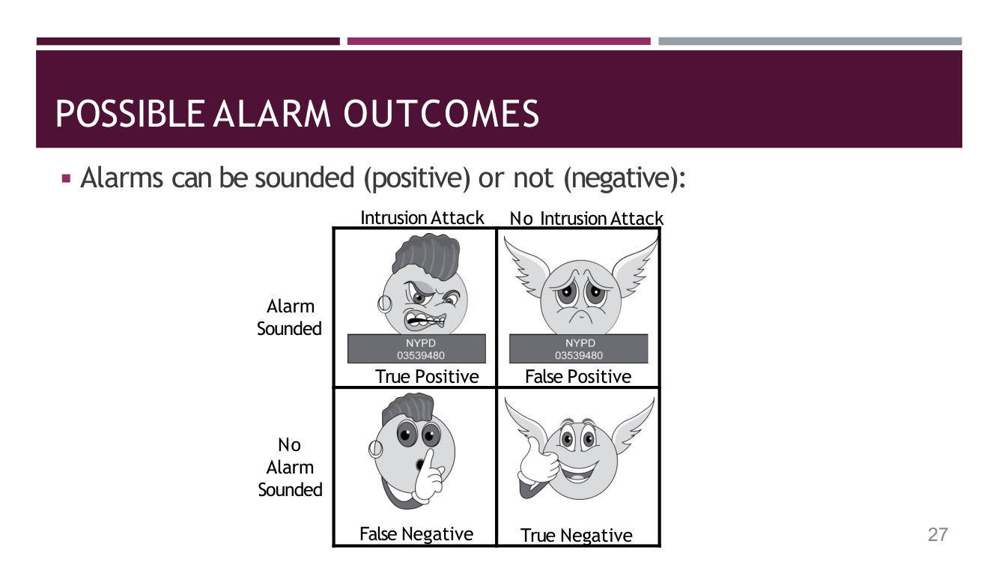
The base-rate fallacy
- It is hard to build an IDS (Intrusion Detection System) with both a high true-positive rate and a low false-negative rate.
- If real intrusions are rare compared to the amount of data analyzed, the IDS's effectiveness drops.
- The base-rate fallacy is a statistical error: judging the probability of a conditional event without considering its "base rate".
Worked example from the slide, step by step
- IDS is 99% accurate: 1% chance of false positives or false negatives.
- Log has 1,000,100 entries.
- Only 100 are really malicious, so 1,000,000 are benign (1,000,100 - 100).
- Malicious: 99% of 100 = 99 detected (true positives). 1% of 100 = 1 missed (false negative).
- Benign: 1% of 1,000,000 = 10,000 flagged by mistake (false positives). The other 990,000 are true negatives.
- Total alarms = 99 + 10,000 = 10,099.
- False alarms = 10,000. 10,000 / 10,099 is about 99%.
| Malicious (100) | Benign (1,000,000) | |
|---|---|---|
| Alarm | TP = 99 | FP = 10,000 |
| No alarm | FN = 1 | TN = 990,000 |
IDS (Intrusion Detection System) event record data
| Field | Meaning |
|---|---|
| Subject | The initiator of an action on the target. |
| Object | The resource being targeted: a file, device, or network protocol. |
| Action | The operation the subject performs on the object. |
| Exception-condition | Any error message or exception raised by the action. |
| Resource-usage | Quantitative items expended by the system performing or responding to the action. |
| Time-stamp | A unique identifier for the moment the action started. |
Host-based vs network-based IDS (HIDS (Host-based Intrusion Detection System) vs NIDS (Network-based Intrusion Detection System))
| Host-based IDS (HIDS) | Network-based IDS (NIDS) | |
|---|---|---|
| Where it runs | On a host, to protect that host | On a dedicated node, to protect all hosts attached to a network |
| Information | Can use lots of information: packets, disk, memory, ... | Must rely on information in the monitored packets |
| Weakness | Misses information available to other (attacked) hosts. If the host is subverted, the IDS is likely subverted too. | Limited to packet information |
| Subversion | Easier | Typically more difficult to subvert |
IDS (Intrusion Detection System) types: rule-based vs statistical
| Rule-based intrusion detection | Statistical intrusion detection | |
|---|---|---|
| Idea | Rules match known profiles / signatures of attacks. | Builds a profile: a statistical picture of how a user normally acts or a host is normally used. |
| Alarm when | An event matches the signature of a rule: alarm immediately, possibly naming the suspected attack type. | A user or host deviates significantly from its stored profile (past a threshold for anomalous behavior). |
| Finds | Known attacks | Unusual / anomalous behavior |
Must-know in one screen
- Firewall = integrated collection of security measures that prevents unauthorized electronic access to a networked system; traffic passes through choke points.
- Firewalls do not stop inside attacks, so use defense in depth (multiple layers).
- Three outcomes: accepted, dropped (silent), rejected (source is told).
- Rules use: TCP (Transmission Control Protocol)/UDP (User Datagram Protocol), source/destination IP (Internet Protocol), source/destination port, application payload.
- Blacklist = permit all unless forbidden (flexible, naive). Whitelist = default-deny, forbid all unless allowed (safer).
- Stateless: header only, ignores payload, no memory, each packet alone; port 80 = Web, 22 = SSH (Secure Shell).
- Stateful: keeps a table of connections (IPs, ports, sequence numbers); allows inbound TCP only as a response to an inside-initiated connection; more expensive.
- Application proxy: client talks to proxy, proxy talks to server; application-specific; full content inspection (filter URLs (Uniform Resource Locators), log email, scan viruses); less transparent.
- Personal firewall: on a user's PC (Personal Computer), default-deny.
- IDS (Intrusion Detection System) = next line of defense: sensors send events, the manager applies site policies and sounds an alarm.
- Intruders: masquerader, misfeasor, clandestine user.
- IDS detects: port scans, DoS (Denial of Service), malware, ARP (Address Resolution Protocol) spoofing, DNS (Domain Name System) cache poisoning.
- TP (True Positive) alarm + attack; FP (False Positive) alarm, no attack; FN (False Negative) attack, no alarm; TN (True Negative) no attack, no alarm.
- Base-rate fallacy: 99% accurate IDS, 1,000,100 logs, 100 attacks gives 99 TP, 1 FN, 10,000 FP, so 10,099 alarms and about 99% false alarms.
- HIDS (Host-based Intrusion Detection System) protects one host (rich info, can be subverted with the host); NIDS (Network-based Intrusion Detection System) protects a whole network (packets only, harder to subvert). Rule-based = signatures; statistical = deviation from a profile.
Lecture 6 · Basic Cryptography
Objectives and what cryptography covers
- Define cryptography.
- Describe hash, symmetric, and asymmetric cryptographic algorithms.
- List the various ways in which cryptography is used.
- Defining cryptography means understanding what it is, what it can do, and how it is used as a security tool to protect data.
Slides 1–3
Cryptography vs steganography
| Cryptography | Steganography | |
|---|---|---|
| Goal | Scrambling information so it cannot be read | Hides the existence of data |
| How | Transforms information into a secure form so unauthorized persons cannot access it | An image, audio, or video file contains hidden messages embedded in it |
| Technique | Algorithm + key | Achieved by dividing data and hiding it in unused portions of the file |
Slide 6 (Figure 5-1, data hidden by steganography): a secret text message ("The secret password...") is converted to binary. Those bits are placed inside the metadata headers of an image file (Metadata Header 1 and Metadata Header 2 hold header size, image width/height, bits per pixel, and so on). The result still looks like a normal picture (the Statue of Liberty), so nobody knows a message is inside.
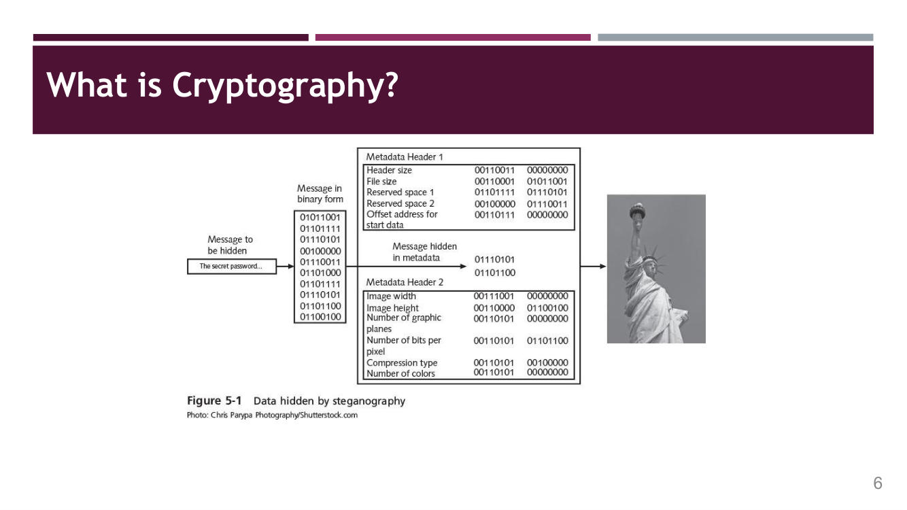
Slides 4, 6
History of cryptography
- Origins: used by Julius Caesar.
- Slide 5 shows two historical devices: the Enigma machine (a wooden case with keyboard, lamps and rotors) and the Thomas encryption invention (a wooden cylinder of rotating discs).
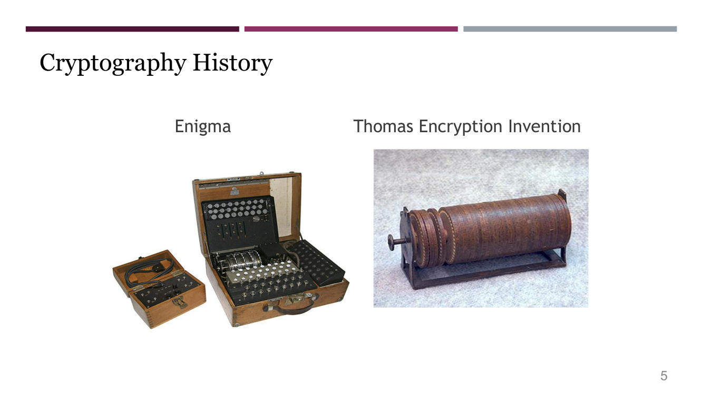
Slides 5, 7
Basic terms and the cryptographic process
- Encryption: changing original text into a secret message using cryptography.
- Decryption: changing the secret message back to its original form.
- Cleartext data: data stored or transmitted without encryption.
- Plaintext: cleartext data to be encrypted. It is the input to a cryptographic algorithm.
- Algorithm: procedures based on a mathematical formula, used to encrypt and decrypt the data.
- Key: a mathematical value entered into the algorithm to produce ciphertext (encrypted data). The reverse process uses the key to decrypt the message.
Slide 9 (Figure 5-2, cryptographic process): plaintext ("Confidential Memo...") goes through the encryption algorithm with a key and becomes ciphertext. The ciphertext is transmitted to the remote user. There it goes through the decryption algorithm with a key and becomes the original plaintext again.
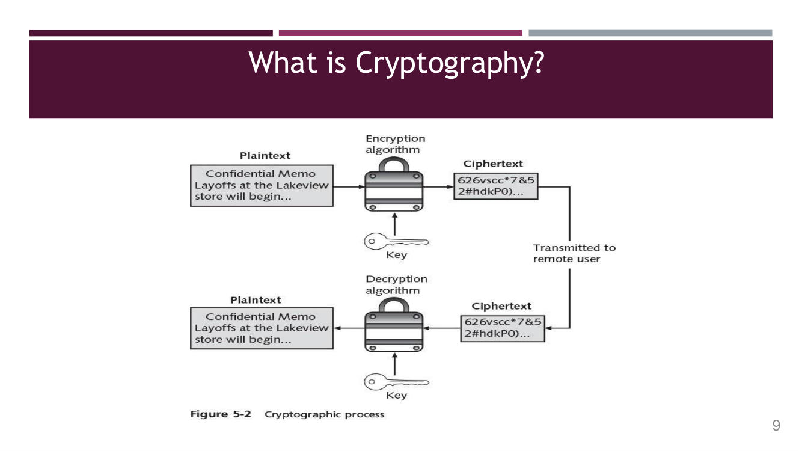
Slides 7–9
Five basic protections of cryptography
| Characteristic | Description | Protection |
|---|---|---|
| Confidentiality | Ensures only authorized parties can view the information | Encrypted information can only be viewed by those who have been provided the key |
| Integrity | Ensures the information is correct and no unauthorized person or malicious software has altered the data | Encrypted information cannot be changed except by authorized users who have the key |
| Availability | Ensures data is accessible to authorized users | Authorized users are provided the decryption key to access the information |
| Authentication | Provides proof of the genuineness of the user (sender can be verified) | Proof that the sender was legitimate and not an imposter can be obtained |
| Non-repudiation | Proves that a user performed an action | Individuals are prevented from fraudulently denying that they were involved in a transaction |
Slide 11 is this table (Table 5-1, information protections by cryptography).
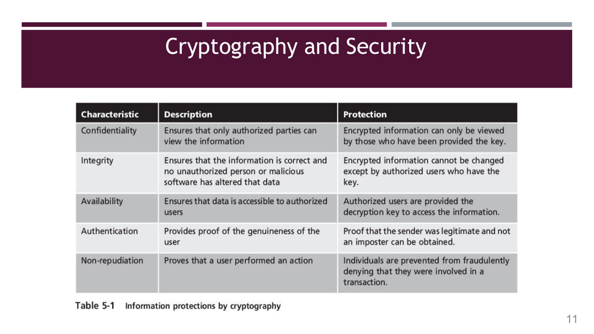
Slides 10–11
Stream vs block vs sponge
The fundamental difference between algorithms is the amount of data processed at a time.
| Type | What it does |
|---|---|
| Stream cipher | Takes one character and replaces it with another |
| Block cipher | Manipulates an entire block of plaintext at one time |
| Sponge function | Takes as input a string of any length and returns a string of any requested variable length |
Slide 12
Three categories of algorithms
- Hash algorithms
- Symmetric cryptographic algorithms
- Asymmetric cryptographic algorithms
| Hash | Symmetric | Asymmetric | |
|---|---|---|---|
| Keys | No key (HMAC (Hashed Message Authentication Code) adds a shared secret key) | One single key encrypts and decrypts | Two mathematically related keys (public and private) |
| Also called | Hashing, digest, digital fingerprint | Shared/private key cryptography | Public key cryptography |
| Reversible? | No (one-way) | Yes | Yes |
| Main use | Comparison, integrity | Protecting data | Key distribution problem solved; authentication |
| Examples | MD5 (Message Digest 5), SHA (Secure Hash Algorithm), Whirlpool, RIPEMD (Race Integrity Primitives Evaluation Message Digest) | DES (Data Encryption Standard), 3DES (Triple Data Encryption Standard), AES (Advanced Encryption Standard), RC (Rivest Cipher), IDEA (International Data Encryption Algorithm), Blowfish | RSA (Rivest-Shamir-Adleman), DSA (Digital Signature Algorithm), ElGamal |
Slide 13 (comparison table built from slides 15–41)
Hash algorithms: what they are
- The most basic type of cryptographic algorithm.
- Creates a unique "digital fingerprint" of a set of data. This is commonly called hashing.
- The fingerprint is called a digest (also called a message digest or hash) and represents the contents.
- Its contents cannot be used to reveal the original data set.
- Primarily used for comparison purposes.
- Hashing is used to determine the integrity of a message or the contents of a file.
Secure hashing algorithm characteristics:
| Characteristic | Meaning |
|---|---|
| Fixed size | Short and long data sets give the same size hash |
| Unique | Two different data sets cannot produce the same hash |
| Original | A data set cannot be created to have a predefined hash |
| Secure | The hash cannot be reversed to determine the original plaintext |
HMAC (Hashed Message Authentication Code):
- A hash variation providing improved security.
- Uses a shared secret key possessed by sender and receiver.
- Receiver uses a key to decrypt the hash.
Slide 14 is only the section title "Hash Algorithms" (divider slide, no content).
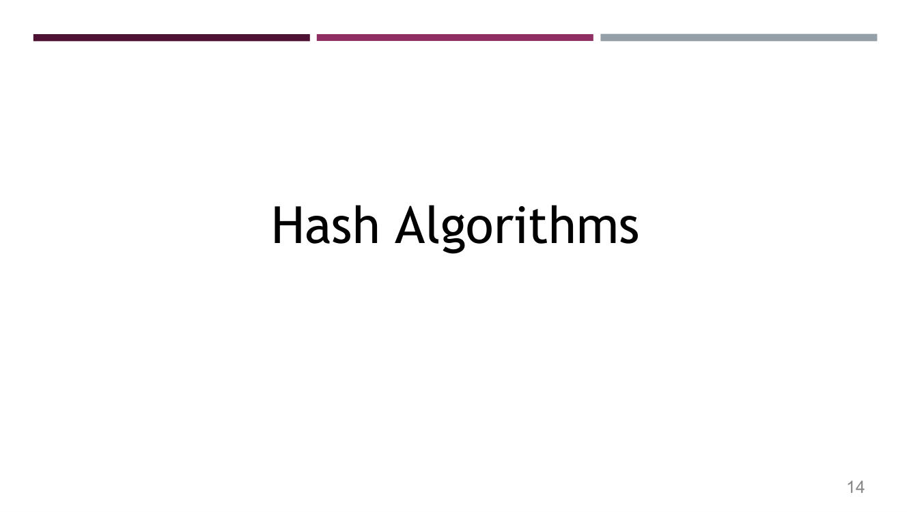
Slide 18 (Figure 5-5, verifying file integrity with digests): a server hosts Install.exe with a posted digest. (1) The file is downloaded. (2) A digest is generated on the downloaded file. (3) That digest is compared with the posted digest. If they match, the file is unchanged.
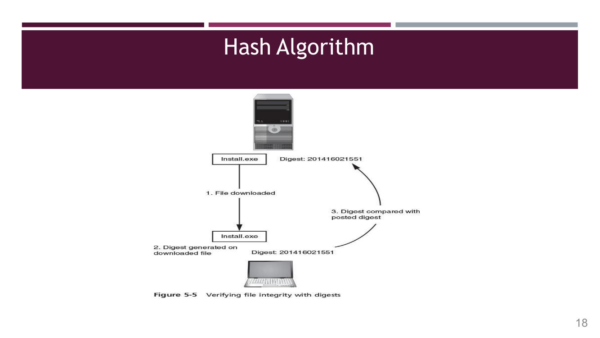
Slide 19 (Table 5-2, protections by hashing): hashing protects integrity only.
| Characteristic | Protection? |
|---|---|
| Confidentiality | No |
| Integrity | Yes |
| Availability | No |
| Authenticity | No |
| Non-repudiation | No |
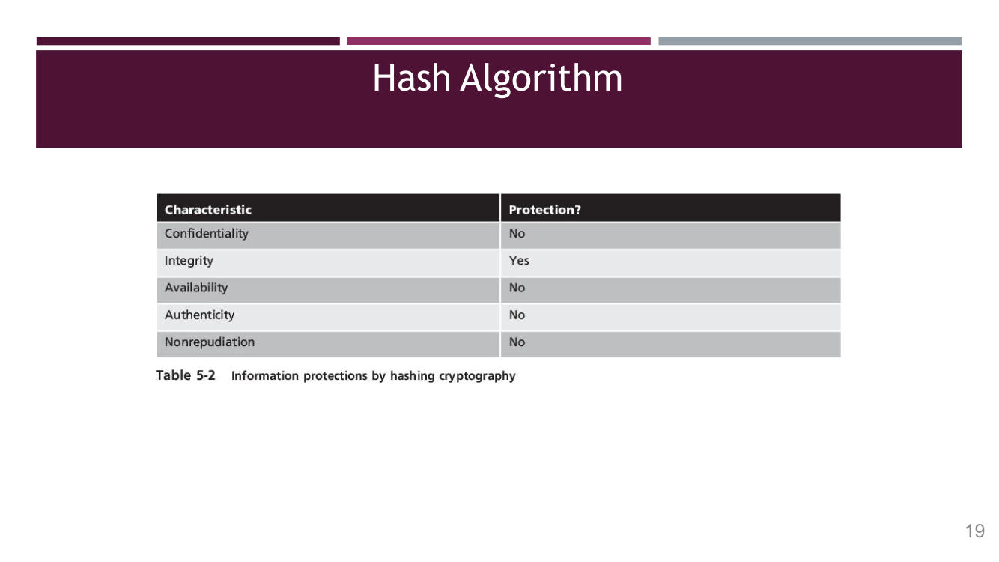
Slides 14–19
Common hash algorithms (MD, SHA, Whirlpool, RIPEMD)
Four most common: Message Digest (MD), Secure Hash Algorithm (SHA), Whirlpool, RIPEMD.
| Algorithm | Key facts |
|---|---|
| MD (Message Digest) | One of the most common one-way hash algorithms. Three versions: MD2 (Message Digest 2), MD4 (Message Digest 4), MD5 (Message Digest 5). |
| MD2 | Takes plaintext of any length and creates a 128-bit hash. Padding is added to make short messages 128 bits. Considered too slow today and rarely used. |
| MD4 | Has flaws and was not widely accepted. |
| MD5 | Designed to address MD4's weaknesses. Message length padded to 512 bits. Some experts recommend a more secure hash algorithm. |
| SHA | More secure than MD. SHA-3 (Secure Hash Algorithm 3) uses a sponge function instead of stream or block ciphers. |
| Whirlpool | A recent cryptographic hash function. Adopted by standards organizations including ISO (International Organization for Standardization). Creates a hash of 512 bits. |
| RIPEMD (Race Integrity Primitives Evaluation Message Digest) | Main design feature: two different, independent parallel chains of computation. The results are combined at the end of the process. |
Slide 24 (Table 5-3, digests generated from one-time hash algorithms): shows the digest each algorithm produces for the same input: MD2, MD4, MD5, RipeMD160, SHA-1 (Secure Hash Algorithm 1), SHA-256 (Secure Hash Algorithm 256), Whirlpool, SHA-3. It is a list of hex strings. Notice that different algorithms give different digests with different lengths (Whirlpool and SHA-3 are the longest).
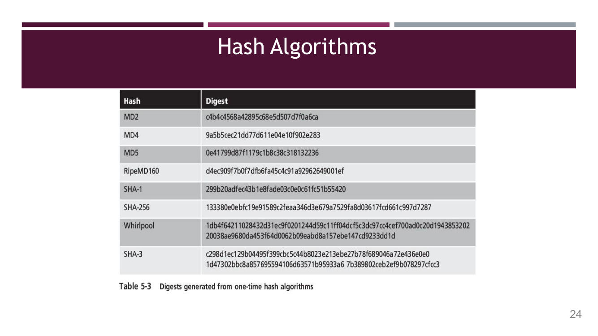
Slides 20–24
Hashing use cases (file checksum and keyed hash)
- Slide 25, hashing use case: a Cisco download page for the ASA Device Manager file (asdm-732-102.bin, 26.41 MB). The page lists an MD5 (Message Digest 5) Checksum (highlighted in red). After downloading, you compute the MD5 of your file and compare it. A match means the file was not altered.
- Keyed hashes use an additional secret key as input to the hash function.
- The secret key is known to the sender and receiver.
- Adds authentication to integrity assurance.
- Defeats man-in-the-middle attacks.
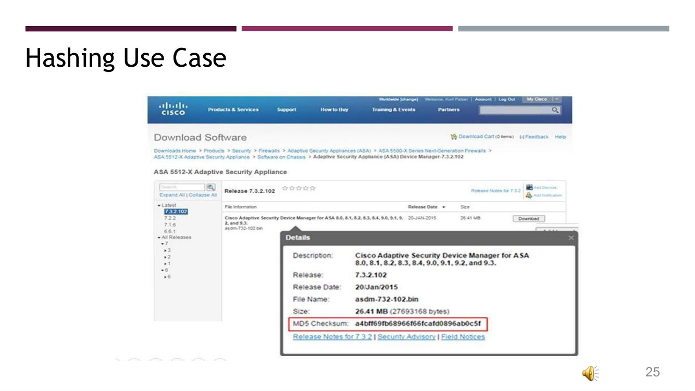
Slide 27 (cryptographic authentication use case): Router A joins its routing update with the secret key and runs both through the hash function to get a hash. It sends the hash together with the routing update across the Internet. Router B takes the received routing update, adds its own copy of the same key, and computes a hash. Router B then asks "Hash = ?": is the hash received from Router A equal to the hash computed by Router B? If yes, the update is genuine and unchanged. An attacker without the key cannot forge a matching hash.
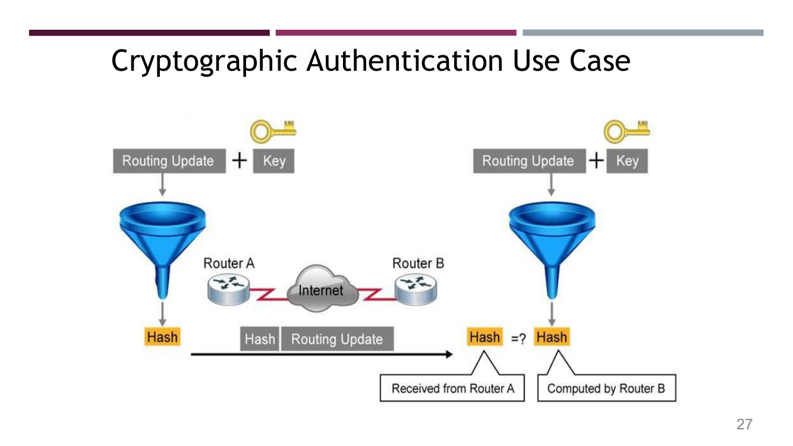
Slides 25–27
Symmetric cryptographic algorithms
- Use the same single key to encrypt and decrypt a document.
- The original cryptographic algorithms were symmetric.
- Also called shared/private key cryptography (the key is kept private between sender and receiver).
- Common algorithms: DES (Data Encryption Standard), 3DES (Triple Data Encryption Standard), AES (Advanced Encryption Standard), plus several others.
Slide 30 (Table 5-4, protections by symmetric cryptography):
| Characteristic | Protection? |
|---|---|
| Confidentiality | Yes |
| Integrity | Yes |
| Availability | Yes |
| Authenticity | No |
| Non-repudiation | No |
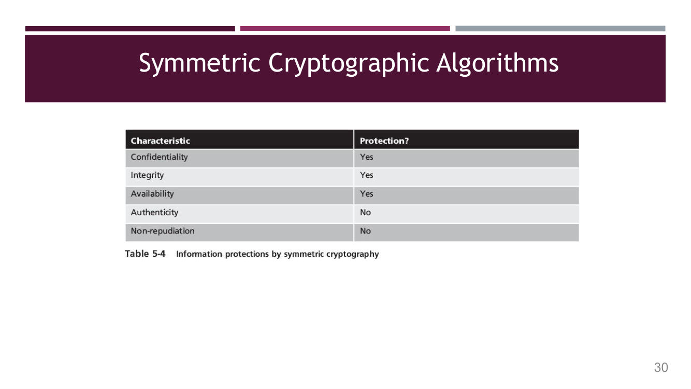
Slide 31 (Figure 5-6, symmetric/private key cryptography): the same plaintext memo is encrypted with a key (shown as 134706242008) into ciphertext, sent to the remote user, and decrypted using an identical key (same number) to get the plaintext back. The point: both sides use the identical key.
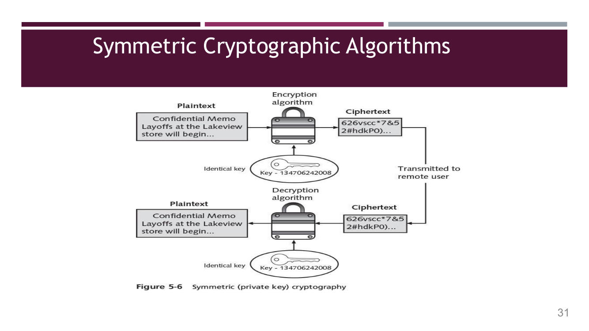
Slides 28–31
DES vs 3DES vs AES
| DES | 3DES | AES | |
|---|---|---|---|
| Full name | Data Encryption Standard | Triple Data Encryption Standard | Advanced Encryption Standard |
| Key size | 56-bit key | Three rounds, each with its own key (not on slides: 3 x 56 bits) | Not given on slides (not on slides: 128, 192 or 256 bits) |
| Block size | Block cipher (not on slides: 64 bits) | Block cipher (not on slides: 64 bits) | 128 bits per block of plaintext |
| Origin | Based on a product designed in the early 1970s | Designed to replace DES | Approved by NIST (National Institute of Standards and Technology) in 2000 as a replacement for DES |
| How it works | Block cipher | Three rounds of encryption. Ciphertext of the first round becomes input of the second iteration. Most secure versions use different keys for each round | Three steps on every block (128 bits) of plaintext |
| Extra | Official encryption standard of the U.S. Government. Designed to be secure well into the future |
Slide 33 (Figure 5-7, 3DES): the plaintext is encrypted by algorithm 1 with key 1 (16081) to give ciphertext 1. Ciphertext 1 is encrypted by algorithm 2 with key 2 (65329) to give ciphertext 2. Ciphertext 2 is encrypted by algorithm 3 with key 3 (98730) to give ciphertext 3. Three rounds, three different keys.
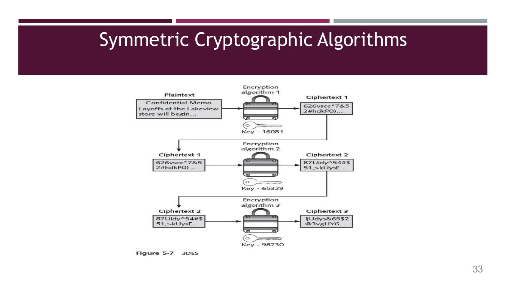
Slides 32–34
Other symmetric algorithms
| Algorithm | Facts |
|---|---|
| Rivest Cipher (RC) | A family of cipher algorithms designed by Ron Rivest |
| IDEA (International Data Encryption Algorithm) | Used in European nations. Block cipher processing 64 bits with a 128-bit key and 8 rounds |
| Blowfish | Block cipher on 64-bit blocks with key lengths from 32 to 448 bits |
Slide 35
Asymmetric cryptographic algorithms
- Weakness of symmetric algorithms: distributing and maintaining a secure single key among multiple users distributed geographically.
- Asymmetric algorithms are also known as public key cryptography.
- Use two mathematically related keys.
- Public key: available to everyone and freely distributed.
- Private key: known only to the individual to whom it belongs.
- Important principles: key pairs, public key, private key, and keys can work in both directions.
- Usual key length: 512 bits to 4096 bits.
- Examples: RSA (Rivest-Shamir-Adleman), DSA (Digital Signature Algorithm), ElGamal.
Slide 36 is only the section title "Asymmetric Cryptographic Algorithms" (divider slide, no content).
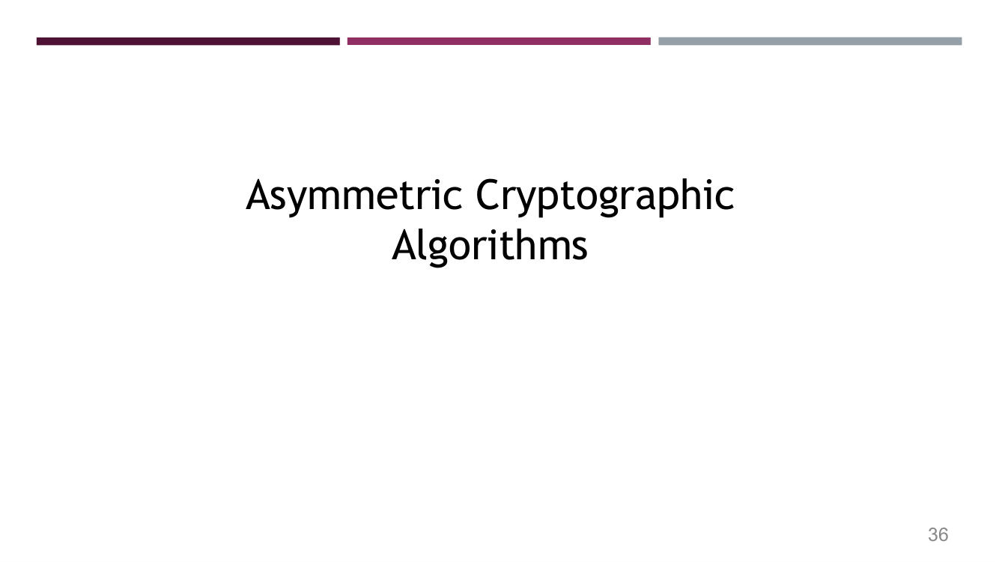
Slide 38 (Figure 5-8, public key cryptography): Bob (sender) encrypts the memo using Alice's public key. The ciphertext is sent. Alice (receiver) decrypts it using Alice's private key. The two keys are different.
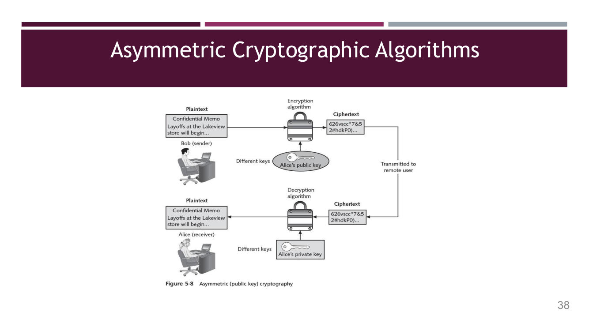
Slide 40: the top half shows an encryption key (blue tag) and a different decryption key (orange tag): "$1000" becomes "%3f7&4" and then "$1000" again. The bottom half shows confidentiality: Alice encrypts a clear message with Bob's public key, and Bob decrypts with Bob's private key.
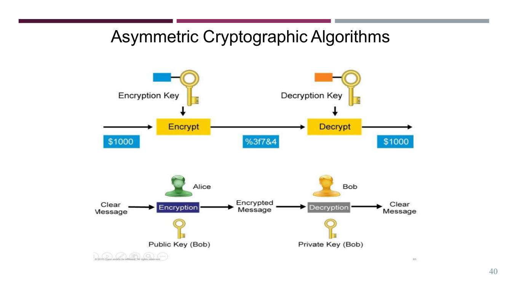
Slide 41 (authentication / digital signature): Alice encrypts the message with her private key. Bob verifies the signature using the public key from Alice. Alice's authenticity is verified. Authentication is unidirectional: similar operations are needed for the other direction (authenticating Bob to Alice).
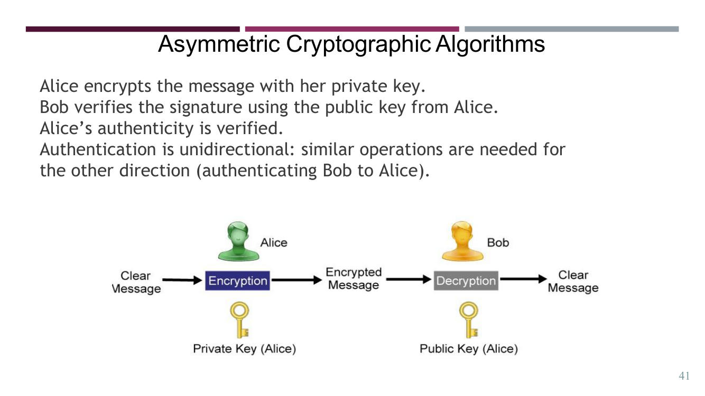
Which key does what:
| Goal | Encrypt with | Decrypt / verify with | Result |
|---|---|---|---|
| Send a secret to Bob (slides 38, 40) | Bob's public key | Bob's private key | Only Bob can read it |
| Prove Alice sent it (slide 41) | Alice's private key | Alice's public key | Alice's authenticity is verified |
Slides 36–41
Using cryptography: software vs hardware
Cryptography should be used to secure data that needs to be protected. It can be applied through either software or hardware.
| Software encryption | Hardware encryption | |
|---|---|---|
| Security | Can be subject to attacks that exploit its vulnerabilities | Higher degree of security (embedded in hardware) |
| Examples | PGP (Pretty Good Privacy), GPG (GNU Privacy Guard), EFS (Encrypting File System), BitLocker | Encrypted USB (Universal Serial Bus) drives, self-encrypting hard drives, TPM (Trusted Platform Module), hardware security module |
Slide 42 is only the section title "Using Cryptography" (divider slide, no content).
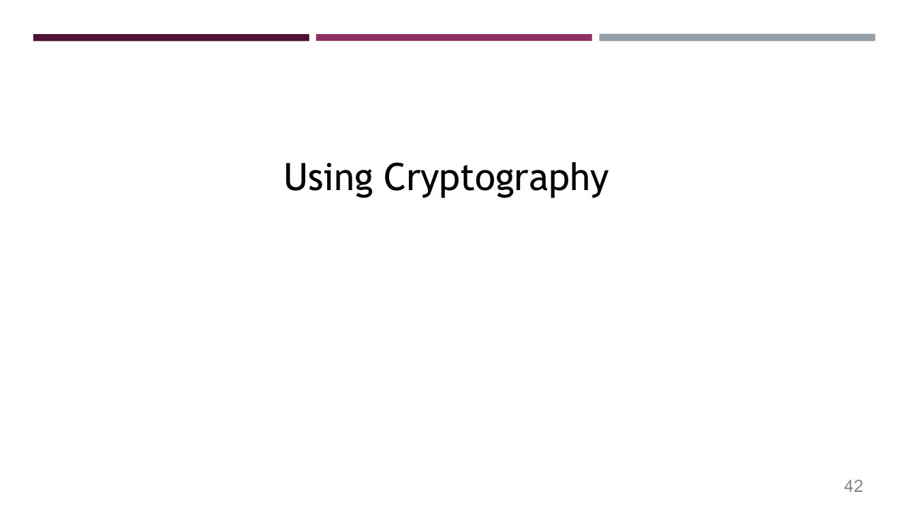
Slides 42–43, 47
Encryption through software
- File and file system cryptography: encryption software can encrypt or decrypt files one by one. Groups of files are protected with file system cryptography.
- PGP (Pretty Good Privacy): a widely used asymmetric cryptography system. Used for files and e-mails on Windows systems.
- GPG (GNU Privacy Guard): runs on Windows, UNIX and Linux.
- EFS (Microsoft Windows Encrypting File System): cryptography system for Windows. Uses the NTFS (New Technology File System) file system. Tightly integrated with the file system. Encryption and decryption are transparent to the user.
- Whole disk encryption: protects all data on a hard drive. Example: BitLocker, included in Microsoft Windows.
- BitLocker encrypts the entire system volume, including the Windows Registry.
- Prevents attackers from accessing data by booting from another OS (Operating System) or placing the hard drive in another computer.
Slides 44–46
Encryption through hardware
Hardware encryption options: Trusted Platform Module and hardware security module. It can be applied to USB (Universal Serial Bus) devices and standard hard drives.
| Option | Key facts |
|---|---|
| USB device encryption | Encrypted hardware-based flash drives. Will not connect to a computer until the correct password is provided. All data copied is automatically encrypted. Tamper-resistant external cases. Administrators can remotely control and track activity. Stolen drives can be remotely disabled. |
| Hard disk drive encryption | Self-encrypting hard disk drives protect all files stored on them. The drive and host device perform an authentication process at initial power up. If authentication fails, the drive can deny access or delete encryption keys so all data is permanently unreadable. |
| Trusted Platform Module (TPM) | A chip on the computer's motherboard that provides cryptographic services. Includes a true random number generator. Done entirely in hardware so it cannot be subject to software attack. Prevents the computer from booting if files or data have been altered. Prompts for a password if the hard drive is moved to a new computer. |
Slides 47–50
Must-know in one screen
- Cryptography scrambles information so it cannot be read; steganography hides that the data exists.
- Five protections: confidentiality, integrity, availability, authentication, non-repudiation.
- Plaintext + algorithm + key = ciphertext; the reverse process decrypts.
- Stream = one character; block = whole block; sponge = any input length, any output length.
- Three categories: hash, symmetric, asymmetric.
- Hash = digital fingerprint (digest), one-way, fixed size, protects integrity only.
- HMAC (Hashed Message Authentication Code) = hash with a shared secret key; adds authentication and defeats man-in-the-middle attacks.
- MD2 (Message Digest 2) = 128-bit hash; MD4 (Message Digest 4) flawed; MD5 (Message Digest 5) fixes MD4 (padded to 512 bits); Whirlpool = 512 bits; SHA-3 (Secure Hash Algorithm 3) uses a sponge function; RIPEMD (Race Integrity Primitives Evaluation Message Digest) = two parallel chains.
- Symmetric = one same key (shared/private key); gives confidentiality, integrity, availability, not authenticity or non-repudiation.
- DES (Data Encryption Standard) = 56-bit key block cipher; 3DES (Triple Data Encryption Standard) = three rounds, ideally different keys; AES (Advanced Encryption Standard) = NIST (National Institute of Standards and Technology) 2000, 128-bit blocks, US Government standard.
- IDEA (International Data Encryption Algorithm) = 64-bit block, 128-bit key, 8 rounds; Blowfish = 64-bit block, 32 to 448-bit key.
- Asymmetric = public key cryptography, two related keys, usual length 512 to 4096 bits; examples RSA (Rivest-Shamir-Adleman), DSA (Digital Signature Algorithm), ElGamal.
- Secrecy: encrypt with the receiver's public key, decrypt with the receiver's private key. Authentication: encrypt with your private key, others verify with your public key.
- Software: PGP (Pretty Good Privacy), GPG (GNU Privacy Guard), EFS (NTFS (New Technology File System)), BitLocker (whole disk, includes Registry). Hardware: encrypted USB (Universal Serial Bus), self-encrypting drives, TPM (Trusted Platform Module) (motherboard chip, true random number generator).
- Hardware encryption gives a higher degree of security than software, which can be attacked through its vulnerabilities.
Not in your slides
Old-syllabus questions found in the papers that your lectures don't teach. They are left out of every other tab.
Mistakes in the files
Where a model answer, printed key or bank was wrong or doubtful. The page uses the corrected answer.
Every abbreviation used in the lectures and exams. Say the full name, then flip.